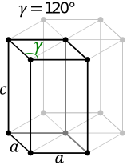
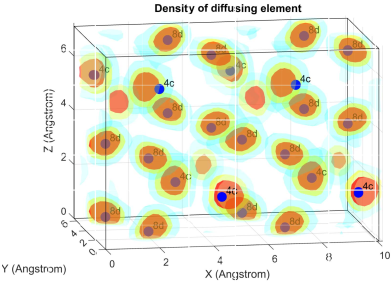
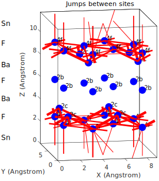

Computational analysis and modeling of fluoride ion
battery materials
F.Q. de Boer
in partial fulfilment of the requirements for the degree of Master of Science
in Applied Physics
at the Delft University of Technology
Faculty of Applied Sciences
Storage of Electrochemical Energy group
As the current standard of lithium-ion batteries remain costly, fluoride-ion batteries have in recent years gained significant interest as an alternative new battery chemistry, however the technology is still at the stage of exploring which materials to use. Using a high-throughput computational approach, battery materials can be analysed fast and focused on specific limitations.
For this research, this approach was used to study the theoretical suitability of fluoride-ion battery materials. Hundreds of fluoride compounds from the Materials Project database were collected and their electrochemical properties were calculated to compare their suitability for use in fluoride ion batteries. It is shown that based on their theoretical properties, BiF3, SnF3 and V2O2F are the most suitable fluoride-ion battery electrode materials to use with BaSnF4 electrolyte. The electrode pair of Sn2OF5/Sn2OF2 was found to be a possible intercalation electrode as it shares the same space group.
The material BiF3 is an experimentally tested fluoride-ion battery electrode material which has a low ionic conductivity. Doping this material has been reported to improve its conductivity. By using first-principles density functional theorem simulations, the stability of Pnma, P63 and Fm3m space group structures of the Bi1-xMxF3-x (M=Sn, Ba, Pb) system were investigated. It was found that the intermediates of these three systems are stable or metastable, with especially Bi0.45Ba0.55F2.55 forming a stable intermediate of the Fm3m space group. These findings show that Bi1-xMxF3-x (M=Sn, Ba, Pb) solid solutions are likely to be synthesizable experimentally.
The ionic conductivity of fluoride ions in BaSnF4, a solid state electrolyte, was studied using first-principles molecular dynamics simulations. Is it known that BaSnF4 of the P4/nmm space group has a conduction barrier formed by the Ba-Ba layer. Selective creation of fluorine vacancies in the Ba-Ba barrier layer showed improved ionic conductivity from 4.4e-3 S/cm to 1.7e-2 S/cm at room temperature.
The ionic conductivity of fluoride ions in BiF3 was studied, and specific vacancies were created targeting an improvement of the ionic conductivity. The aliovalent substitution of SnBi' and of vF* were simulated using first-principles molecular dynamics simulations and compared against BiF3 without defects. It was found that the combination of SnBi' and of vF* resulted in an improved conductivity to a much larger degree than SnBi' or vF* separately could accomplish. For undoped BiF3 at 1000 K, a conductivity of 3.5e-3 S/cm was found and an activation energy of 1.33 eV, which was reduced to 1.0S/cm and 0.230 eV for Bi6Sn2F22.
References
Allam, Omar, Byung Woo Cho, Ki Chul Kim, and Seung Soon Jang. 2018.
“Application of DFT-Based Machine Learning for
Developing Molecular Electrode Materials in Li-Ion Batteries.”RSC Advances 8 (69): 39414–20. https://doi.org/10.1039/c8ra07112h.
Amatucci, Glenn G., and Nathalie Pereira. 2007. “Fluoride Based
Electrode Materials for Advanced Energy Storage Devices.”Journal of Fluorine Chemistry 128 (4): 243–62. https://doi.org/10.1016/j.jfluchem.2006.11.016.
Anand, Shashwat, Kaiyang Xia, Vinay I. Hegde, Umut Aydemir, Vancho
Kocevski, Tiejun Zhu, Chris Wolverton, and G. Jeffrey Snyder. 2018.
“A Valence Balanced Rule for Discovery of 18-Electron
Half-Heuslers with Defects.”Energy &
Environmental Science 11 (6): 1480–88. https://doi.org/10.1039/c8ee00306h.
Anderson, O. L., and D. A. Stuart. 1954. “Calculation of
Activation Energy of Ionic Conductivity in Silica Glasses by Classical
Methods.”Journal of the American Ceramic Society 37
(12): 573–80. https://doi.org/10.1111/j.1151-2916.1954.tb13991.x.
Arbizzani, Catia, Giulio Gabrielli, and Marina Mastragostino. 2011.
“Thermal Stability and Flammability of Electrolytes for
Lithium-Ion Batteries.”Journal of Power Sources 196
(10): 4801–5. https://doi.org/10.1016/j.jpowsour.2011.01.068.
Aroyo, M. I., J. M. Perez-Mato, D. Orobengoa, E. Tasci, G. de la Flor,
and A. Kirov. 2011. “Crystallography Online: Bilbao
Crystallographic Server.”Bulg. Chem. Commun. 43 (2):
183–97.
Aroyo, Mois I., Asen Kirov, Cesar Capillas, J. M. Perez-Mato, and Hans
Wondratschek. 2006. “Bilbao Crystallographic Server.
II. Representations of Crystallographic Point Groups and
Space Groups.”Acta Crystallographica Section A 62 (2):
115–28. https://doi.org/10.1107/s0108767305040286.
Aroyo, Mois Ilia, Juan Manuel Perez-Mato, Cesar Capillas, Eli Kroumova,
Svetoslav Ivantchev, Gotzon Madariaga, Asen Kirov, and Hans
Wondratschek. 2006. “Bilbao Crystallographic Server: I. Databases
and Crystallographic Computing Programs.”Zeitschrift Für
Kristallographie - Crystalline Materials 221 (1): 15–27. https://doi.org/10.1524/zkri.2006.221.1.15.
Atahan-Evrenk, Şule, and Alan Aspuru-Guzik. 2014a. Prediction and
Calculation of Crystal Structures : Methods and Applications. Cham
Switzerland: Springer.
———. 2014b. Prediction and Calculation of Crystal Structures.
Springer-Verlag GmbH.
Aydinol, M. K., A. F. Kohan, G. Ceder, K. Cho, and J. Joannopoulos.
1997. “Ab Initio Study of Lithium Intercalation in Metal Oxides
and Metal Dichalcogenides.”Physical Review B 56 (3):
1354–65. https://doi.org/10.1103/physrevb.56.1354.
Balbuena, Perla. 1999. Molecular Dynamics : From Classical to
Quantum Methods. Amsterdam New York: Elsevier.
Bhatia, Harshita, Duc Tho Thieu, Alexander Herald Pohl, Venkata Sai K.
Chakravadhanula, Mohammed H. Fawey, Christian Kübel, and Maximilian
Fichtner. 2017. “Conductivity Optimization of Tysonite-Type
La1xBaxF3x Solid Electrolytes for
Advanced Fluoride Ion Battery.”ACS Applied
Materials & Interfaces 9 (28): 23707–15. https://doi.org/10.1021/acsami.7b04936.
Boev, A. O., S. S. Fedotov, K. J. Stevenson, and D. A. Aksyonov. 2021.
“High-Throughput Computational Screening of Cathode Materials for
Li-O2 Battery.”Computational Materials Science 197
(September): 110592. https://doi.org/10.1016/j.commatsci.2021.110592.
Borah, R., F. R. Hughson, J. Johnston, and T. Nann. 2020. “On
Battery Materials and Methods.”Materials Today Advances
6 (June): 100046. https://doi.org/10.1016/j.mtadv.2019.100046.
Borodin, Oleg, Marco Olguin, Carrie E Spear, Kenneth W Leiter, and
Jaroslaw Knap. 2015. “Towards High Throughput Screening of
Electrochemical Stability of Battery Electrolytes.”Nanotechnology 26 (35): 354003. https://doi.org/10.1088/0957-4484/26/35/354003.
Cabana, Jordi, Laure Monconduit, Dominique Larcher, and M. Rosa Palacı́n.
2010. “Beyond Intercalation-Based Li-Ion Batteries: The State of
the Art and Challenges of Electrode Materials Reacting Through
Conversion Reactions.”Advanced Materials 22 (35):
E170–92. https://doi.org/10.1002/adma.201000717.
Ceder, Gerbrand. 2010. “Opportunities and Challenges for
First-Principles Materials Design and Applications to Li Battery
Materials.”MRS Bulletin 35 (9): 693–701.
https://doi.org/10.1557/mrs2010.681.
Ceder, Gerbrand, Y-M Chiang, DR Sadoway, MK Aydinol, Y-I Jang, and
Biying Huang. 1998. “Identification of Cathode Materials for
Lithium Batteries Guided by First-Principles Calculations.”Nature 392 (6677): 694–96.
Chae, Sujong, Namhyung Kim, Jiyoung Ma, Jaephil Cho, and Minseong Ko.
2017. “One-to-One Comparison of Graphite-Blended Negative
Electrodes Using Silicon Nanolayer-Embedded Graphite Versus Commercial
Benchmarking Materials for High-Energy Lithium-Ion Batteries.”Advanced Energy Materials 7 (15): 1700071. https://doi.org/10.1002/aenm.201700071.
Chagnes, Alexandre, and Jolanta Swiatowska, eds. 2015. Lithium
Process Chemistry: Resources, Extraction, Batteries, and Recycling.
Elsevier Science & Technology.
Chaudhuri, Santanu, Michael Castiglione, Francis Wang, Mark Wilson, Paul
A. Madden, and Clare P. Grey. 2000. “Study of Fluoride Ion Motions
in PbSnF4 and BaSnF4 Compounds with Molecular
Dynamics Simulation and Solid State NMR Techniques.”MRS Online Proceedings Library (OPL) 658. https://doi.org/10.1557/proc-658-gg10.9.
Chaudhuri, Santanu, Francis Wang, and Clare P. Grey. 2002.
“Resolving the Different Dynamics of the Fluorine Sublattices in
the Anionic Conductor BaSnF4 by Using High-Resolution
MASNMR Techniques.”Journal of the
American Chemical Society 124 (39): 11746–57. https://doi.org/10.1021/ja026155j.
Cheng, Lei, Rajeev S. Assary, Xiaohui Qu, Anubhav Jain, Shyue Ping Ong,
Nav Nidhi Rajput, Kristin Persson, and Larry A. Curtiss. 2015.
“Accelerating Electrolyte Discovery for Energy Storage with
High-Throughput Screening.”The Journal of Physical Chemistry
Letters 6 (2): 283–91. https://doi.org/10.1021/jz502319n.
Chernov, S, A Moskvin, and I Murin. 1991. “Structure of Lead (II)
Tetrafluorostannate (II) Prepared by Hydrothermal Synthesis.”Solid State Ionics 47: 71–73. https://doi.org/10.1016/0167-2738(91)90182-B.
Christe, Karl O., William W. Wilson, and Carl J. Schack. 1978. “On
the Syntheses and Properties of Some Hexafluorobismuthate (v) Salts and
Their in the Metathetical Synthesis of Salts.”Journal of
Fluorine Chemistry 11 (1): 71–85. https://doi.org/10.1016/s0022-1139(00)81599-7.
“Collaborative Data Science.” 2015. Montreal, QC: Plotly
Technologies Inc. 2015.
Crompton, T. R. 2000. Battery Reference Book. Elsevier Science
& Technology.
Danto, Y., G. Poujade, J. D. Pistré, C. Lucat, and J. Salardenne. 1978.
“A Pb|PbF2||bi Thin
Solid Film Reversible Galvanic Cell.”Thin Solid Films
55 (3): 347–54. https://doi.org/10.1016/0040-6090(78)90151-7.
De Boer, FQ. 2015. “Failure Mechanisms in Lithium Silicon
Batteries.” Master’s thesis, Delft University of Technology.
Denes, G., Y. H. Yu, T. Tyliszczak, and A. P. Hitchcock. 1991.
“Sn–k, Pb–L3, and Ba–L3 EXAFS, x-Ray Diffraction and
119Sn Mössbauer Spectroscopic Studies of Ordered (m = Pb and Ba)
Fluoride Ionic Conductors with the α-
Structure.”Journal of Solid State Chemistry 91 (1):
1–15. https://doi.org/10.1016/0022-4596(91)90051-i.
Dénès, Georges, Florence Grée, and Abdualhafeed Muntasar. 2002.
“Phase Transitions in Superionic BaSnF4 Upon Ball-Milling and
Subsequent Treatments.”
Dénès, Georges, Jamil Hantash, Abdualhafeed Muntasar, Philip Oldfield,
and Alan Bartlett. 2007. “Variations of BaSnF4 Fast
Ion Conductor with the Method of Preparation and Temperature.”Hyperfine Interactions 170 (1-3): 145–58. https://doi.org/10.1007/s10751-006-9464-5.
Dudney, Nancy. 2016. Handbook of Solid State Batteries. New
Jersey Hong Kong: World Scientific Pub.
Garche, Jürgen, ed. 2013. Encyclopedia of Electrochemical Power
Sources. Elsevier Science & Techn.
Gaskell, David. 2018. Introduction to the Thermodynamics of
Materials. Boca Raton, FL: CRC Press.
G.Dénès, T.Birchall, M.Sayer, and M. F.Bell. 1984.“
a New Fluoride Ionic Conductor with the α- Structure.”Solid State
Ionics 13 (3): 213–19. https://doi.org/10.1016/0167-2738(84)90032-8.
Gorai, Prashun, Theodosios Famprikis, Baltej Singh, Vladan Stevanović,
and Pieremanuele Canepa. 2021. “Devil Is in the Defects:
Electronic Conductivity in Solid Electrolytes.”Chemistry of
Materials 33 (18): 7484–98. https://doi.org/10.1021/acs.chemmater.1c02345.
Groult, H., D. Devilliers, N. Kumagai, T. Nakajima, and Y. Matsuo. 1996.
“Vanadium Oxide Fluoride-Graphite Intercalation Compounds:
Structural Characteristics and Electrochemical Insertion of Lithium
Cations.”Journal of The Electrochemical Society 143
(7): 2093–99. https://doi.org/10.1149/1.1836964.
Gschwind, F. 2016. “Fluoride Ion Batteries: Theoretical
Performance, Safety, Toxicity, and a Combinatorial Screening of New
Electrodes.”Journal of Fluorine Chemistry 182: 76–90.
https://doi.org/10.1016/j.jfluchem.2015.12.002.
Gschwind, Fabienne, and Joshua Bastien. 2015. “Parametric
Investigation of Room-Temperature Fluoride-Ion Batteries: Assessment of
Electrolytes, Mg-Based Anodes, and BiF3-Cathodes.”Journal of Materials Chemistry A 3 (10): 5628–34. https://doi.org/10.1039/c4ta06625a.
Gschwind, Fabienne, Holger Euchner, and Gonzalo Rodriguez-Garcia. 2017.
“Chloride Ion Battery Review: Theoretical Calculations, State of
the Art, Safety, Toxicity, and an Outlook Towards Future
Developments.”European Journal of Inorganic Chemistry
2017 (21): 2784–99. https://doi.org/10.1002/ejic.201700288.
Hafner, Jürgen. 2008. “Ab-Initiosimulations of Materials Using
VASP: Density-Functional Theory and Beyond.”Journal of Computational Chemistry 29 (13): 2044–78. https://doi.org/10.1002/jcc.21057.
Hamad, Ibrahim Abou, M. A. Novotny, D. O. Wipf, and P. A. Rikvold. 2010.
“A New Battery-Charging Method Suggested by Molecular Dynamics
Simulations.”Physical Chemistry Chemical Physics 12
(11): 2740. https://doi.org/10.1039/b920970k.
Hannah, Daniel C., Gopalakrishnan Sai Gautam, Pieremanuele Canepa, and
Gerbrand Ceder. 2018. “On the Balance of Intercalation and
Conversion Reactions in Battery Cathodes.”Advanced Energy
Materials 8 (20): 1800379. https://doi.org/10.1002/aenm.201800379.
Hartman, Steven T., and Rohan Mishra. 2020. “Layered Electrides as
Fluoride Intercalation Anodes.”Journal of Materials
Chemistry A 8 (46): 24469–76. https://doi.org/10.1039/d0ta06162j.
Hautier, Geoffroy. 2016. “Prediction of New Battery Materials
Based on Ab Initio Computations.” In AIP Conference
Proceedings. Author(s). https://doi.org/10.1063/1.4961901.
Hautier, Geoffroy, Anubhav Jain, Hailong Chen, Charles Moore, Shyue Ping
Ong, and Gerbrand Ceder. 2011. “Novel Mixed Polyanions Lithium-Ion
Battery Cathode Materials Predicted by High-Throughput Ab Initio
Computations.”Journal of Materials Chemistry 21 (43):
17147. https://doi.org/10.1039/c1jm12216a.
Haynes, William. 2017. CRC Handbook of Chemistry and Physics.
Boca Raton, Florida: CRC Press.
He, Qiu, Bin Yu, Zhaohuai Li, and Yan Zhao. 2019. “Density
Functional Theory for Battery Materials.”ENERGY&ENVIRONMENTALMATERIALS 2 (4): 264–79. https://doi.org/10.1002/eem2.12056.
Hellenbrandt, Mariette. 2004. “The Inorganic Crystal Structure
Database (ICSD)present and Future.”Crystallography Reviews 10 (1): 17–22. https://doi.org/10.1080/08893110410001664882.
Ichitsubo, Tetsu, Shunsuke Yagi, Takayuki Doi, Shunsuke Yukitani, Kosuke
Hirai, and Eiichiro Matsubara. 2011. “Influence of Mechanical
Strain on the Electrochemical Lithiation of Aluminum-Based Electrode
Materials.”Journal of The Electrochemical Society 159
(1): A14–17. https://doi.org/10.1149/2.038201jes.
Jain, Anubhav, Shyue Ping Ong, Geoffroy Hautier, Wei Chen, William
Davidson Richards, Stephen Dacek, Shreyas Cholia, et al. 2013.
“Commentary: The Materials Project: A Materials Genome Approach to
Accelerating Materials Innovation.”APL Materials 1 1
(1): 011002. https://doi.org/10.1063/1.4812323.
Kamali-Heidari, Elham, Ata Kamyabi-Gol, Mahmoud Heydarzadeh sohi, and
Abolghasem Ataie. 2018. “Electrode Materials for Lithium Ion
Batteries: A Review.”Journal of Ultrafine Grained and
Nanostructured Materials 51. https://doi.org/10.22059/jufgnsm.2018.01.01.
Kawahara, Kazuaki, Ryo Ishikawa, Kei Nakayama, Naoya Shibata, and Yuichi
Ikuhara. 2021. “Room Temperature Fluoride Ion Conductivity in
Defective β-KSb1-δF4-3δ
Polycrystals.”Journal of Power Sources 483 (January):
229173. https://doi.org/10.1016/j.jpowsour.2020.229173.
Kennedy, John H., and Ronald C. Miles. 1976. “Ionic Conductivity
of Doped Beta-Lead Fluoride.”Journal of The Electrochemical
Society 123 (1): 47–51. https://doi.org/10.1149/1.2132763.
Kharbachi, A. El, O. Zavorotynska, M. Latroche, F. Cuevas, V. Yartys,
and M. Fichtner. 2020. “Exploits, Advances and Challenges
Benefiting Beyond Li-Ion Battery Technologies.”Journal of
Alloys and Compounds 817 (March): 153261. https://doi.org/10.1016/j.jallcom.2019.153261.
Kishore, M. V. V. M. Satya, and U. V. Varadaraju. 2005. “Influence
of Isovalent Ion Substitution on the Electrochemical Performance of
LiCoPO4.”Materials Research Bulletin 40
(10): 1705–12. https://doi.org/10.1016/j.materresbull.2005.05.011.
Kisliuk, A., V. Bocharova, I. Popov, C. Gainaru, and A. P. Sokolov.
2019. “Fundamental Parameters Governing Ion Conductivity in
Polymer Electrolytes.”Electrochimica Acta 299 (March):
191–96. https://doi.org/10.1016/j.electacta.2018.12.143.
Klerk, Niek J. J. de, Eveline van der Maas, and Marnix Wagemaker. 2018.
“Analysis of Diffusion in Solid-State Electrolytes Through
MD Simulations, Improvement of the Li-Ion Conductivity in
β- as an Example.”ACS
Applied Energy Materials 1 (7): 3230–42. https://doi.org/10.1021/acsaem.8b00457.
Konishi, Hiroaki, Taketoshi Minato, Takeshi Abe, and Zempachi Ogumi.
2017a. “Electrochemical Performance of a Bismuth Fluoride
Electrode in a Reserve-Type Fluoride Shuttle Battery.”Journal of The Electrochemical Society 164 (14): A3702–8. https://doi.org/10.1149/2.0931714jes.
———. 2017b. “Electrochemical Reaction Mechanism for Bi1-x Ba x
F3-x (x =0, 0.1, 0.2, and 0.4) Electrodes in Lithium-Ion
Batteries.”ChemistrySelect 2 (22):
6399–6406. https://doi.org/10.1002/slct.201701001.
———. 2020. “Electrochemical Performance of BiF 3
-BaF 2 Solid Solution with Three Different Phases on a
Fluoride Shuttle Battery System.”ChemistrySelect 5 (16): 4943–46. https://doi.org/10.1002/slct.202000713.
Kraytsberg, Alexander, and Yair Ein-Eli. 2017. “A Critical
Review-Promises and Barriers of Conversion Electrodes for Li-Ion
Batteries.”Journal of Solid State Electrochemistry 21
(7): 1907–23. https://doi.org/10.1007/s10008-017-3580-9.
Kresse, G., and J. Hafner. 1993. “Ab Initio Molecular Dynamics for
Liquid Metals.”Physical Review B 47 (1): 558–61. https://doi.org/10.1103/physrevb.47.558.
Lalena, John N., David A. Cleary, and Olivier B. M. Hardouin Duparc.
2020. Principles of Inorganic Materials Design. Wiley.
Li, Hongyi, Takitaro Yamaguchi, Shingo Matsumoto, Hiroaki Hoshikawa,
Toshiaki Kumagai, Norihiko L. Okamoto, and Tetsu Ichitsubo. 2020.
“Circumventing Huge Volume Strain in Alloy Anodes of Lithium
Batteries.”Nature Communications 11 (1). https://doi.org/10.1038/s41467-020-15452-0.
Lide, David. 2000. CRC Handbook of Chemistry and Physics. 81st
ed. Boca Raton: CRC Press.
Lindorff-Larsen, K., S. Piana, R. O. Dror, and D. E. Shaw. 2011.
“How Fast-Folding Proteins Fold.”Science 334
(6055): 517–20. https://doi.org/10.1126/science.1208351.
Liu, Bo, Da Wang, Maxim Avdeev, Siqi Shi, Jiong Yang, and Wenqing Zhang.
2019. “High-Throughput Computational Screening of Li-Containing
Fluorides for Battery Cathode Coatings.”ACS
Sustainable Chemistry & Engineering 8 (2): 948–57.
https://doi.org/10.1021/acssuschemeng.9b05557.
Liu, Lei, Li Yang, Min Liu, Xiaolong Li, Dingsheng Shao, Kaili Luo,
Xianyou Wang, and Zhigao Luo. 2020. “SnF2-Based
Fluoride Ion Electrolytes MSnF4 (m = Ba, Pb) for the
Application of Room-Temperature Solid-State Fluoride Ion
Batteries.”Journal of Alloys and Compounds 819 (April):
152983. https://doi.org/10.1016/j.jallcom.2019.152983.
Liu, Lei, Li Yang, Dingsheng Shao, Kaili Luo, Changfei Zou, Zhigao Luo,
and Xianyou Wang. 2020.“ Doped Solid Electrolyte for Advanced
Room-Temperature Solid-State Fluoride Ion Batteries.”Ceramics International 46 (12): 20521–28. https://doi.org/10.1016/j.ceramint.2020.05.161.
Liu, Xiao Hua, Li Zhong, Shan Huang, Scott X. Mao, Ting Zhu, and Jian Yu
Huang. 2012. “Size-Dependent Fracture of Silicon Nanoparticles
During Lithiation.”ACS Nano 6 (2):
1522–31. https://doi.org/10.1021/nn204476h.
Luo, J., C. Y. Dai, Z. Wang, K. Liu, W. G. Mao, D. N. Fang, and X. Chen.
2016. “In-Situ Measurements of Mechanical and Volume Change of
LiCoO2 Lithium-Ion Batteries During Repeated
Chargedischarge Cycling by Using Digital Image
Correlation.”Measurement 94 (December): 759–70. https://doi.org/10.1016/j.measurement.2016.09.023.
Meijer, J A, and W van der Lugt. 1989. “Resistivity of Liquid k-Bi
and Cs-Bi Alloys.”Journal of Physics: Condensed Matter
1 (48): 9779–84. https://doi.org/10.1088/0953-8984/1/48/024.
Menictas, Chris, M. Skyllas-Kazacos, and T. M. Lim, eds. 2014.
Advances in Batteries for Medium and Large-Scale Energy Storage:
Types and Applications. Cambridge, UK Waltham, MA, USA: Elsevier
Woodhead Publishing.
Meutzner, F., T. Nestler, M. Zschornak, P. Canepa, G. S. Gautam, S.
Leoni, S. Adams, T. Leisegang, V. A. Blatov, and D. C. Meyer. 2018.
“Computational Analysis and Identification of Battery
Materials.”Physical Sciences Reviews 4 (1). https://doi.org/10.1515/psr-2018-0044.
Miller, Beth. 2020. “Study Finds Fluorine as Possible Substitute
for Lithium in Rechargeable Batteries.”
Mohammad, Irshad, and Raiker Witter. 2019. “Testing Mg as an Anode
Against BiF3 and SnF2 Cathodes for Room
Temperature Rechargeable Fluoride Ion Batteries.”Materials
Letters 244 (June): 159–62. https://doi.org/10.1016/j.matlet.2019.02.052.
Mohammad, Irshad, Raiker Witter, Maximilian Fichtner, and M. Anji Reddy.
2018. “Room-Temperature, Rechargeable Solid-State Fluoride-Ion
Batteries.”ACS Applied Energy Materials 1
(9): 4766–75. https://doi.org/10.1021/acsaem.8b00864.
———. 2019. “Introducing Interlayer Electrolytes: Toward
Room-Temperature High-Potential Solid-State Rechargeable Fluoride Ion
Batteries.”ACS Applied Energy Materials 2
(2): 1553–62. https://doi.org/10.1021/acsaem.8b02166.
Momma, Koichi, and Fujio Izumi. 2011. “VESTA 3 for
Three-Dimensional Visualization of Crystal, Volumetric and Morphology
Data.”Journal of Applied Crystallography 44 (6):
1272–76. https://doi.org/10.1107/s0021889811038970.
Morris, Andrew J., C. P. Grey, R. J. Needs, and Chris J. Pickard. 2011.
“Energetics of Hydrogen/Lithium Complexes in Silicon Analyzed
Using the Maxwell Construction.”Physical Review B 84
(22): 224106. https://doi.org/10.1103/physrevb.84.224106.
Moses, Isaiah A., Rajendra P. Joshi, Burak Ozdemir, Neeraj Kumar, Jesse
Eickholt, and Veronica Barone. 2021. “Machine Learning Screening
of Metal-Ion Battery Electrode Materials.”ACS
Applied Materials & Interfaces 13 (45): 53355–62.
https://doi.org/10.1021/acsami.1c04627.
Murray, Eoin. 2006. “NMR Studies of Conduction Mechanisms in
Electrolyte Materials for Fuel Cells.” PhD thesis. Dublin City
University.
Naccarato, Francesco, Francesco Ricci, Jin Suntivich, Geoffroy Hautier,
Ludger Wirtz, and Gian-Marco Rignanese. 2019. “Searching for
Materials with High Refractive Index and Wide Band Gap: A
First-Principles High-Throughput Study.”Physical Review
Materials 3 (4): 044602.
Nakamichi, Masaru, Jae-Hwan Kim, Makoto M. Nakamura, Tamaki Shibayama,
Christopher K. Dorn, Chakin Vladimir, Dmitry V. Bachurin, Christopher
Stihl, and Pavel V. Vladimirov. 2020. “Beryllium and Its Alloys as
Neutron Multiplying Materials.” In Comprehensive Nuclear
Materials, 203–50. Elsevier. https://doi.org/10.1016/b978-0-12-803581-8.11673-x.
Nakano, Hiroyuki, Toshiyuki Matsunaga, Takuya Mori, Koji Nakanishi,
Yoshiyuki Morita, Kazuto Ide, Ken-ichi Okazaki, et al. 2020.
“Fluoride-Ion Shuttle Battery with High Volumetric Energy
Density.”Chemistry of Materials 33 (1): 459–66. https://doi.org/10.1021/acs.chemmater.0c04570.
Nazri, Gholamabbas. 2009. Lithium Batteries : Science and
Technology. New York, N.Y: Springer.
Newnham, Robert. 2005. Properties of Materials : Anisotropy,
Symmetry, Structure. Oxford New York: Oxford University Press.
Nowroozi, Mohammad Ali, Irshad Mohammad, Palanivel Molaiyan, Kerstin
Wissel, Anji Reddy Munnangi, and Oliver Clemens. 2021. “Fluoride
Ion Batteries Past, Present, and Future.”Journal of Materials Chemistry A 9 (10): 5980–6012. https://doi.org/10.1039/d0ta11656d.
Nowroozi, Mohammad Ali, Kerstin Wissel, Jochen Rohrer, Anji Reddy
Munnangi, and Oliver Clemens. 2017. “LaSrMnO4:
Reversible Electrochemical Intercalation of Fluoride Ions in the Context
of Fluoride Ion Batteries.”Chemistry of Materials 29
(8): 3441–53. https://doi.org/10.1021/acs.chemmater.6b05075.
Okazaki, Ken-ichi, Yoshiharu Uchimoto, Takeshi Abe, and Zempachi Ogumi.
2017. “Chargedischarge Behavior of Bismuth in a
Liquid Electrolyte for Rechargeable Batteries Based on a Fluoride
Shuttle.”ACS Energy Letters 2 (6):
1460–64. https://doi.org/10.1021/acsenergylett.7b00320.
Olivetti, Elsa A., Gerbrand Ceder, Gabrielle G. Gaustad, and Xinkai Fu.
2017. “Lithium-Ion Battery Supply Chain Considerations: Analysis
of Potential Bottlenecks in Critical Metals.”Joule 1
(2): 229–43. https://doi.org/10.1016/j.joule.2017.08.019.
Ong, Shyue Ping, William Davidson Richards, Anubhav Jain, Geoffroy
Hautier, Michael Kocher, Shreyas Cholia, Dan Gunter, Vincent L.
Chevrier, Kristin A. Persson, and Gerbrand Ceder. 2013. “Python
Materials Genomics (Pymatgen): A Robust, Open-Source Python Library for
Materials Analysis.”Computational Materials Science 68
(February): 314–19. https://doi.org/10.1016/j.commatsci.2012.10.028.
Parimalam, Bharathy S., and Brett L. Lucht. 2018. “Reduction
Reactions of Electrolyte Salts for Lithium Ion Batteries:
LiPF6, LiBF4, LiDFOB,
LiBOB, and LiTFSI.”Journal of The
Electrochemical Society 165 (2): A251–55. https://doi.org/10.1149/2.0901802jes.
Patro, L. N., and K. Hariharan. 2011. “Influence of Synthesis
Methodology on the Ionic Transport Properties of
BaSnF4.”Materials Research Bulletin 46
(5): 732–37. https://doi.org/10.1016/j.materresbull.2011.01.010.
Pelton, A., and A. Petric. 1993. “The Bi-Rb (Bismuth-Rubidium)
System.”Journal of Phase Equilibria 14: 368–72.
Pérez. 1980. “About the Allotropic Transformations of .”Materials Research Bulletin 15: 587–93.
Petrovic, Slobodan. 2021. Battery Technology Crash Course.
Springer International Publishing.
Portier, J, P Hagenmuller, JM Réau, C Lucat, P Cot, and S Vilminot.
1978. “Study of Structural and Electrical-Properties of a New
Anion Conductor-PbSnF4.”Materials Research Bulletin.
Preishuber-Pflügl, Florian, Viktor Epp, Suliman Nakhal, Martin Lerch,
and Martin Wilkening. 2014. “Defect-Enhanced f- Ion Conductivity
in Layer-Structured Nanocrystalline BaSnF4 Prepared by
High-Energy Ball Milling Combined with Soft Annealing.”Physica Status Solidi (c) 12 (1-2): 10–14. https://doi.org/10.1002/pssc.201400193.
Reau, J. 1985. “Respective Influence of Optimization Criteria on
Transport Properties of Solid Solution (m=in, Bi).”Solid
State Ionics 15 (3): 217–23. https://doi.org/10.1016/0167-2738(85)90006-2.
Reau, J. M., J. Grannec, C. Lucat, C. Chartier, S. Matar, J. Portier,
and P. Hagenmuller. 1982. “Anionic Conductivity of Some Bismuth
Fluorides with Fluorite-Type Structure.”Journal of Fluorine
Chemistry 19 (3-6): 363–68. https://doi.org/10.1016/s0022-1139(00)83138-3.
Reddy, M. Anji, and M. Fichtner. 2011. “Batteries Based on
Fluoride Shuttle.”Journal of Materials Chemistry 21
(43): 17059. https://doi.org/10.1039/c1jm13535j.
Rhandour, A., J. M. Reau, S. F. Matar, S. B. Tian, and P. Hagenmuller.
1985. “New Fluorine Ion Conductors with Tysonite-Type
Structure.”Materials Research Bulletin 20 (11):
1309–27. https://doi.org/10.1016/0025-5408(85)90125-4.
Ricci, Francesco, Alexander Dunn, Anubhav Jain, Gian-Marco Rignanese,
and Geoffroy Hautier. 2020. “Gapped Metals as Thermoelectric
Materials Revealed by High-Throughput Screening.”Journal of
Materials Chemistry A 8 (34): 17579–94.
Rongeat, Carine, M. Anji Reddy, Raiker Witter, and Maximilian Fichtner.
2013. “Nanostructured Fluorite-Type Fluorides as Electrolytes for
Fluoride Ion Batteries.”The Journal of Physical Chemistry
C 117 (10): 4943–50. https://doi.org/10.1021/jp3117825.
———. 2014. “Solid Electrolytes for Fluoride Ion Batteries: Ionic
Conductivity in Polycrystalline Tysonite-Type Fluorides.”ACS Applied Materials &
Interfaces 6 (3): 2103–10. https://doi.org/10.1021/am4052188.
Sangster, J., and A. Pelton. 1991. “The Bi-Cs (Bismuth-Cesium)
System.”Journal of Phase Equilibria 12: 443–46.
Sholl, David, and Janice A. Steckel. 2011. Density Functional
Theory: A Practical Introduction. John Wiley & Sons.
Sorokin, N. I., and B. P. Sobolev. 2007. “Nonstoichiometric
Fluoridessolid Electrolytes for Electrochemical Devices: A
Review.”Crystallography Reports 52 (5): 842–63. https://doi.org/10.1134/s1063774507050148.
Tanner, David. 2012. “Lengthening the Timescale Reach of Molecular
Dynamics.” PhD thesis, University of Illinois at
Urbana-Champaign.
Trapp, C. A., and M. P. Cady. 2011. Solutions Manual to Accompany
Physical Chemistry for the Life Sciences. Oxford: Oxford University
Press.
Urban, Alexander, Dong-Hwa Seo, and Gerbrand Ceder. 2016.
“Erratum: Computational Understanding of Li-Ion Batteries.”Npj Computational Materials 2 (1). https://doi.org/10.1038/npjcompumats.2016.10.
Urusov, V, and T Nadezhina. 2009. “Frequency Distribution and
Selection of Space Groups in Inorganic Crystal Chemistry.”Journal of Structural Chemistry 50: 22–37.
Vitins, G., and K. West. 1997. “Lithium Intercalation into Layered
LiMnO2.”Journal of The Electrochemical
Society 144 (8): 2587–92. https://doi.org/10.1149/1.1837869.
Wang, Jinzhu, Jipeng Hao, Chaomin Duan, Xinchao Wang, Kai Wang, and
Cheng Ma. 2021. “A Fluoride-Ion-Conducting Solid Electrolyte with
Both High Conductivity and Excellent Electrochemical Stability.”Small, November, 2104508. https://doi.org/10.1002/smll.202104508.
Wilkening, Martin, Andre Düvel, Florian Preishuber-Pflügl, Klebson da
Silva, Stefan Breuer, Vladimir Šepelák, and Paul Heitjans. 2016.
“Structure and Ion Dynamics of Mechanosynthesized Oxides and
Fluorides.”Zeitschrift Für Kristallographie - Crystalline
Materials 232 (1-3): 107–27. https://doi.org/10.1515/zkri-2016-1963.
Yabuuchi, Naoaki, Kei Kubota, Mouad Dahbi, and Shinichi Komaba. 2014.
“Research Development on Sodium-Ion Batteries.”Chemical Reviews 114 (23): 11636–82. https://doi.org/10.1021/cr500192f.
Yang, Zhenhua, Yong Pei, Xianyou Wang, Li Liu, and Xuping Su. 2013.
“First Principles Investigation of the Effects of Bi Vacancy on
the Magnetic, Conductive and Electrochemical Properties of .”Computational Materials Science 68 (February): 117–20. https://doi.org/10.1016/j.commatsci.2012.10.003.
Yang, Zhenhua, Shuncheng Tan, Yunqing Huang, Xianyou Wang, and Yong Pei.
2016. “First-Principles Study on Doping Effect of Sn in as Cathode
Materials for Li-Ion Battery.”Current Applied Physics
16 (1): 12–19. https://doi.org/10.1016/j.cap.2015.10.004.
Yang, Zhenhua, Xianyou Wang, Li Liu, Shunyi Yang, and Xuping Su. 2011.
“First-Principles Calculations on Structural, Magnetic and
Electronic Properties of Oxygen Doped BiF3.”Computational Materials Science 50 (11): 3131–35. https://doi.org/10.1016/j.commatsci.2011.05.040.
Yu, Seungho, Sang-Ok Kim, Hyung-Seok Kim, and Wonchang Choi. 2019.
“Computational Screening of Anode Materials for Sodium-Ion
Batteries.”Journal of The Electrochemical Society 166
(10): A1915–19. https://doi.org/10.1149/2.0691910jes.
Zeng, Lingxing, Cheng Zheng, Jingchao Xi, Hailong Fei, and Mingdeng Wei.
2013. “Composites of V2o3ordered Mesoporous Carbon as
Anode Materials for Lithium-Ion Batteries.”Carbon 62
(October): 382–88. https://doi.org/10.1016/j.carbon.2013.06.021.
Zhang, Xueyuan, and T. M. Devine. 2006. “Factors That Influence
Formation of Passive Film on Aluminum in Li-Ion Battery Electrolytes
with .”Journal of The Electrochemical Society 153 (9):
B375. https://doi.org/10.1149/1.2218816.
Zhang, Xu, Zihe Zhang, Sai Yao, An Chen, Xudong Zhao, and Zhen Zhou.
2018. “An Effective Method to Screen Sodium-Based Layered
Materials for Sodium Ion Batteries.”Npj Computational
Materials 4 (1). https://doi.org/10.1038/s41524-018-0070-2.
Zhang, Ying, Yue Pan, Jia Liu, Guiling Wang, and Dianxue Cao. 2015.
“Synthesis and Electrochemical Studies of Carbon-Modified
LiNiPO4 as the Cathode Material of Li-Ion
Batteries.”Chemical Research in Chinese Universities 31
(1): 117–22. https://doi.org/10.1007/s40242-015-4261-9.
Zhao, Wenjia, Jin Yi, Ping He, and Haoshen Zhou. 2019.
“Solid-State Electrolytes for Lithium-Ion Batteries: Fundamentals,
Challenges and Perspectives.”Electrochemical Energy
Reviews 2 (4): 574–605. https://doi.org/10.1007/s41918-019-00048-0.
Zhu, Jian-Nan, Wen-Cui Li, Fei Cheng, and An-Hui Lu. 2015.
“Synthesis of LiMnPO4/c with Superior Performance as
Li-Ion Battery Cathodes by a Two-Stage Microwave Solvothermal
Process.”Journal of Materials Chemistry A 3 (26):
13920–25. https://doi.org/10.1039/c5ta02653a.
Zhuang, Yuchan, Zhen Ma, Yaoming Deng, Xiaona Song, Xiaoxi Zuo, Xin
Xiao, and Junmin Nan. 2017. “Sandwich-Like Mn3O4/Carbon
Nanofragment Composites with a Higher Capacity Than Commercial Graphite
and Hierarchical Voltage Plateaus for Lithium Ion Batteries.”Electrochimica Acta 245 (August): 448–55. https://doi.org/10.1016/j.electacta.2017.05.171.
Introduction
In the past decades, the urgency to slow down climate change has
become apparent worldwide, which has led to shifts in our energy
production and consumption. On the production side, renewable energies
are often mismatched with electricity demand, requiring the need for
storage.(Borah et al.
2020) On the consumption side, electric vehicles and mobile
devices are causing a growth in demand for batteries. Hence, there is an
increase in demand for energy storage devices, a role often fulfilled by
various types of batteries.
The current standard for batteries is based on lithium-ion
technology. Although there is expected to be an adequate amount of
exploitable lithium, other materials required to make current
lithium-ion batteries are rarer, and more difficult to exploit. By
weight percentage, materials such as cobalt, nickel and manganese form a
larger part of battery electrodes than lithium does.(Olivetti et al. 2017)
In addition, especially for electric vehicles, there is a strong demand
for batteries that have improved energy densities, to allow the
production of lighter and smaller vehicles that still offer an operating
range comparable to internal combustion engine vehicles. However,
revolutionary improvements of current battery technology are not close
to commercialization yet and current batteries additional have
operational drawbacks, such as poor performance at low temperatures and
flammability. Therefore, scientists and industry are also looking for
alternative battery technologies. When considering alternative battery
technologies, many of the battery properties depend on the chemistry,
such as energy density, abundance of raw materials, cost, toxicity, and
ease of manufacturing. All of these considerations may also change over
time, for example, carbon nanotubes are becoming easier and cheaper to
manufacture, whereas cobalt has become more expensive, thus what may
seem uncompetitive today could be the mainstream technology in the
future.(Borah et al.
2020) This makes developing alternative battery technologies
worth pursuing, even if they may not be directly competitive with
lithium-ion batteries at the present time.
The fluoride ion battery
One possible alternative battery technology is based on fluoride
ions. Fluoride ion batteries (FIB) utilize fluoride ions instead of
lithium ions to carry charge. Fluoride ions have been described as "the
mirror opposite of the lithium ion",(Miller 2020) as it carries an opposite
charge of the lithium ion, while sharing many of the lithium ions
favourable properties for use in batteries, such as low mass, small
ionic radius and high electrochemical potential. The main incentive for
looking into FIBs as an alternative to the current standard of lithium
ion batteries is that FIBs don not require the same relatively scarce
elements as lithium ion batteries.
Although FIBs have been researched since the 1970s, the topic did not
gain much interest until 2011.(Reddy and Fichtner 2011)(Nowroozi et al. 2021)
The development of FIB, as of 2019, is reported to be at a similar level
as lithium-ion battery technology was during the 1980s, i.e. at least a
decade away from commercialisation. The research is still at the stage
of choosing which materials to use, rather than at refining the battery
design for commercial use.(Bortfitz 2019) This includes choosing
suitable electrode pairs, but one of the most studied topics on FIBs is
the search for a suitable electrolyte material. The material has been
experimentally tested but still requires further improvement.(Wang et al. 2021) The
considerations for battery materials are further explained in the next
chapter.
Computational methods
in battery research
FIBs are a likely future alternative to state-of-art lithium-ion
batteries, and due to differences in chemistry, in many ways a blank
slate to build on. This gives the perspective of substantial
improvements, but it also means that research has decades of catching up
to do. Thanks to new techniques, it is possible to speed up some parts
of the research significantly, compared to what was available during the
early development of lithium-ion batteries in the 1980s. In recent
years, computing power has become more readily available, allowing the
study of the atomic and electronic structure and conductivity of
materials computationally in detail, rather than testing the properties
of each material in the lab. Firstly, this allows scientists to
calculate material properties much faster and consistently than is
possible when having to measure properties empirically. Secondly, this
allows to change material properties in a controlled manner with
relatively little effort. By changing one property at the molecular
level, and keeping everything else equal, the simulation can give
insight in the effect of this specific change, whereas in a lab
experiment, this material might be impossible to synthesize in a manner
that the effect of one specific change can be studied in isolation.
Computational analysis also stimulates thinking out-of-the-box: as
experimental research is rather time consuming, researchers tend to
stick to variations of known materials, to avoid risking time and
funding on dead-ends. As more data and computational power has become
available, computational methods are becoming an important driver behind
discovering new battery materials.(Meutzner et al. 2018) In earlier
research, using a database of previously computationally derived
material properties has been used to study materials for sodium ion
batteries,(Xu Zhang et al.
2018)(Moses et al.
2021) lithium-ion battery electrolytes,(Borodin et al. 2015),
lithium-fluorides,(B. Liu et
al. 2019) and lithium-air electrode materials(Boev et al. 2021) among
others, showing how new insights can be obtained from combining exiting
data.
Research goals
The goal of this research is to investigate the feasibility of new
electrode and electrolyte materials for batteries by means of density
functional theory and molecular dynamics simulations, as well as
developing computer code to select and analyse the most feasible FIB
materials from an existing database. These methods will be used to
answer the questions:
Which fluoride materials have favourable properties to be used as
electrodes in fluoride ion batteries?
How does the phase diagram of the Bi1-xMxF3-x (M=Sn,Ba,Pb) solid solutions
change with increasing x?
What are the conduction pathways of fluoride ions in BiF3 and BaSnF4 and how
can the conduction be improved?
Thesis overview
Firstly, the relevant theory on batteries in general, and FIBs in
particular will be discussed, including the working principle and
material considerations. In addition, the principles behind the
simulation methods used are treated.
The research itself is divided in three parts, with different
approaches to find suitable FIB materials. In the first part, existing
data of material properties is used to get an overview of which types of
battery materials may be interesting for further research as an FIB
component. In the second part, the structure of the alloy of an
experimentally tested FIB electrode material is predicted. Finally, in
the third part, modifications to an FIB electrode and and electrolyte
material are simulated to establish the detailed effect on the ionic
conductivity.
Finally a conclusion will be given, summarizing the findings and
discussing the implications of the combined results. In the appendix,
the relevant sections of the data analysis code, raw data and simulation
input files can be found.
Theory
In order to give the reader a basis for understanding the motivation
and methods for this research, the relevant theory will be treated in
this chapter.
General operation of a
battery
Batteries rely on a specific type of controlled chemical reaction to
convert chemical energy into usable electrical energy. This reaction is
an electrochemical redox reaction, which involves a transfer of
electrons combined with a change in oxidation state of the reacting
molecules.
In a battery, there are two electrodes which contain a material that
will release energy when reduced, and a material that will release
energy when oxidized. When connecting the two materials, electrons will
move from the material that is being oxidized (negative electrode), to
the material being reduced (positive electrode). To maintain a neutral
charge, ions will also move between the electrodes. The moving electrons
produce an electrical current. To use this energy for powering an
external load and to prevent the battery from spontaneously releasing
energy, the electrons are required to follow a path through the load.
This is accomplished by placing an electrolyte material between the two
electrodes. The electrolyte does not conduct electrons, but allows ions
through. The electrons will follow an external path, via for example a
wire, and then recombine with the ions at the other electrode.
Battery capacity and energy
density
The highest theoretical energy density out of a pair of electrode
materials is obtained by choosing the redox reaction pairs, or half
reactions, which provide the highest potential difference (voltage)
between them are to be used. In addition, the more electrons exchanged
per redox pair, and the lighter the molecules participating, the more
current the reaction can provide per weight unit.
Voltage
The potential difference of the redox reaction that takes place in
the battery depends on the free energy of the electrodes on each side of
the reaction. Electrons will be drawn to the electrode with the higher
potential. The higher the potential difference, the stronger the force
behind this, which partially influences the energy that the battery can
deliver. The potential difference is derived from the Gibbs free energy
(G) difference between the
redox pair materials: $$\begin{aligned}
\Delta G & = \Delta E + P\Delta v - T\Delta S\end{aligned}$$
where ΔE is the total
internal energy difference, P
the pressure, v the volume,
T the temperature and S the entropy. As the entropy and
volume differences contribute relatively little, for condensed matter
(i.e. solids and liquid) at low temperatures, they can be dropped(Urban, Seo, and Ceder
2016)(Gaskell
2018), simplifying the equation to:(Menictas, Skyllas-Kazacos, and Lim
2014)(Petrovic
2021)(Aydinol et
al. 1997)$$\begin{aligned}
\Delta G & \approx \Delta E = -n F V
\label{eq:gibbs}\end{aligned}$$ where n is the number of electrons in
moles that are transferred per reaction, F Faraday’s constant and V the redox voltage.
When a battery with a known chemistry is available, equation [eq:gibbs] can be used to find the Gibbs
free energy difference, whereas when known materials are considered, the
same equation can be used to find the theoretical cell voltage by
calculating the material’s total internal energy computationally. insert
about chemical potential
If the energies of all the participants in the reaction are known,
the average cell voltage can be calculated using this formula:(Xu Zhang et al. 2018)$$\begin{aligned}
V & = -\frac{E_{A_nB} - n E_A - E_B}{nF}
\label{eq:voltage2}\end{aligned}$$
Specific capacity
One of the most important measures of quantifying and comparing the
energy density of various battery chemistries it the specific capacity,
it is defined by:
Electrolyte
The ability of the electrolyte to allow ions to pass through and
prevent electrons to pass through is essential for the performance of
the battery and worth discussing in more detail. The following four
requirements are important for the electrolyte:(Zhao et al. 2019)
High ionic conductivity for the charge carrying ion
Low electronic conductivity
Suitable electrochemical stability window
Low resistance across interfaces
The first and second point follow from the basic principle of
operation of a battery. If the ionic conductivity is too low, the
voltage of the battery will drop over the electrolyte, as it will
exhibit a higher electrical resistance. In addition, the rate of charge
and discharge can be limited by the electrolyte in case of a low
conductivity. Low electronic conductivity is required to prevent
unwanted chemical reactions in the electrolyte, a significantly high
electronic conductivity can even lead to short-circuits, which could
cause for example fires.(Gorai et al. 2021) The stability window
of an electrolyte indicates the voltage window between the reduction and
oxidation voltage of the electrolyte itself. Exceeding the window during
battery operation, the electrolyte will irreversibly decompose.(Urban, Seo, and Ceder
2016) To pair electrodes with a certain voltage difference, the
electrolyte used should have at least a larger voltage window. For
example, the stability window of the material can be calculated using
the equation: $$\begin{aligned}
V_{red} & = -\frac{E(\textrm{\ce{BaSnF_6}}) -
E(\textrm{\ce{BaSnF_4}}) - E(\textrm{\ce{BaSnF_4}}) - 2E(\text{F})}{2}\\
V_{ox} & =
-\frac{E(\textrm{\ce{BaSnF_4}})-E(\textrm{\ce{BaF_2}})-E(\text{Sn})
-2E(\text{F})}{2}
\label{eq:basnf4_stab_win}\end{aligned}$$
The last point concerns the resistance of interfaces between the
electrolyte and the electrodes on each side. For a liquid electrolyte
this can be an issue when the electrolyte reacts with the electrode
material, forming a less conductive layer. For solid electrolytes, it
can also be a spatial issue, as the materials physically detach,
reducing the number of contact points.
Fluoride ion batteries
Having established the working principle of batteries and the
relevant qualitative and quantitative properties of the important
materials used in batteries, the defining properties of FIBs and how FIB
materials rate at the previously discussed desirable material properties
can be discussed.
The best compromise?
The motivation behind developing FIBs as a new battery technology of
interest may not be evident, therefore let us consider why FIBs can be
considered a promising alternative to lithium-ion batteries and compare
the FIB other alternative battery chemistries in development. In figure
2.1, some basic, but essential properties
of the significant possible battery charge carrying elements are
compared based on their values for molecular weight, cost (and thereby
indirectly, abundance) and oxidation/reduction potential. The values are
compared on a logarithmic scale of their normalised values, inversed for
values where lower is better (i.e. cost and weight). Considering these
properties, fluoride appears the be the next best charge carrier
following lithium, whilst being cheaper and more abundant in nature.
Going over these other alternatives, they all have some disadvantages
to fluorine:
Lithium: Lightweight and high potential, but
expensive, electrolytes are flammable, long horizon for suitable solid
electrolytes.(Arbizzani, Gabrielli, and Mastragostino
2011)(Zhao et al.
2019)
Chloride: Similar properties to fluoride, but
has a much higher molecular weight and a lower electro negativity than
fluoride, hence resulting in lower energy densities.(Fabienne Gschwind, Euchner,
and Rodriguez-Garcia 2017)
Sodium: Fluoride ions are lighter than sodium
ions, which allows higher theoretical energy densities.(Nowroozi et al. 2021)
Sodium-ions have similar electrochemical properties to lithium-ions,
although the atomic weight is higher. However, when compared as stored
in host material, the gravimetric energy density in a battery would be
comparable for both chemistries. As sodium-ions have a larger ionic
radius than lithium ions, they cannot be intercalated in the current
graphite anodes and have a lower diffusivity.(Kharbachi et al. 2020) And because
sodium is a metal itself, it cannot form conversion type electrodes with
metals like fluorine can.
Magnesium: As a multivalent ion (Mg2+) it would
offer high theoretical energy densities, but the higher charge per ion
also makes it more difficult to cycle.(Xiao, Galatolo, and Pasta 2021)
Potassium: Is in the same periodic group as
lithium and sodium, though being even heavier than sodium, it would be
unlikely to offer any improvements in energy density.(Yabuuchi et al.
2014)
Overview of the suitability of battery
charge carriers. The data behind the graph is included in the
appendix.
In figure 2.2 it is shown that
although per weight unit FIBs are not the holy grail, per volume unit
they could be on par with other technologies in development. Hence, at
the same weight as current lithium-ion batteries, FIBs could offer much
higher energy densities in the same package size. Another benefit is the
wide stability window and high electronegativity of fluoride, allowing
high operating voltages.(Kharbachi et al. 2020) Compared to
other possible lithium ion battery alternatives, FIB has a lower
molecular weight, high volumetric energy density and high voltage.(Nowroozi et al. 2021)
An advantage of using anions such as the fluoride ion (and chloride ion)
is that they can form ionic bonds with metals. This could allow lighter,
more energy-dense electrodes, the so-called conversion electrodes, for
example metal fluorides.(Hartman and Mishra 2020)
Overview of theoretical energy densities
for various types of battery technologies that are being researched.
Adapted from Nowroozi
et al. (2021)
Working principle of a FIB
FIBs operate as has been described before for batteries in general.
Specific to FIBs is the use of the fluoride ion as the charge carrier,
where for example lithium-ion batteries use the lithium ion. The
electrolyte therefore needs to conduct fluoride ions well. One thing of
note is that because the fluoride ion is negatively charged, it moves in
the opposite direction as the electrons, unlike for the positively
charged lithium ion.
Diagram of FIB during discharge. Adapted
from (De Boer
2015)(Reddy and
Fichtner 2011)
The reactions that take place in the FIB are:(Okazaki et al. 2017)
Where Ma and Mb are two types of materials, generally assumed to be metals,
that can form an MFx fluoride and e- are the electrons. This is also shown in
figure 2.3 including the other main
battery components. It can be seen that under normal operation, there is
no elemental fluorine (F2) present in the battery, which would be gaseous and
highly reactive, impeding safe operation of such a battery.(Reddy and Fichtner
2011)
hlIn case there is an excess of electrons at the anode, which may
occur for example when the anode is unindentedly reduced by reacting
with passive battery components such as the electrolyte or current
collector, it is possible for elemental fluorine to form.
Electrode materials
Current commercial lithium-ion batteries use intercalation as a
mechanism to reversibly store lithium in a host structure.(Xie and Lu 2020) This
keeps the structure of the host material intact, which helps to allow
good cycle life of the battery. For redox reactions involving transfer
of a single electron, such as the reduction of the F- ion, intercalation
remains possible.(Hannah
et al. 2018) On the other hand, conversion, which changes the
crystal structure, is also possible for some materials. Conversion
reactions offer much higher theoretical energy densities and is
therefore preferred when possible.(Cabana et al. 2010) The drawback is that
conversion electrodes tend to have lower electronic conductivity, high
voltage hysteresis and especially worse cycling performance than
intercalation electrodes due to a generally large volume change.(Kraytsberg and Ein-Eli
2017)(Kamali-Heidari et al. 2018)(Chagnes and Swiatowska
2015)
For FIBs, metal fluorides are generally the cathode of choice, since
they have a high fluoride ratio, their specific capacity is relatively
high.(Konishi et al.
2017a) Since the fluoride ion is monovalent, it is able to form
bivalent or trivalent metal fluorides, as many metals can have M3+ oxidation
states.(Mohammad et
al. 2018) This allows each reduced metal atom to store two or
three fluorine atoms upon oxidation, allowing high theoretical energy
densities. For research purposes BiF3 is particularly useful, as bismuth can
be identified with X-ray diffraction technique easily.(Fabienne Gschwind and
Bastien 2015) The material has been tested successfully as being
able to function as a reversible FIB cathode material,(Xiao, Galatolo, and Pasta
2021) making it attractive as a proof of concept in this early
stage of research, to develop improvements that can later be applied to
similar materials. Pure BiF3 is not a good ionic and electronic
conductor.(Reddy and
Fichtner 2011) Doping the material has been reported to improve
its conductivity,(Yang et
al. 2011) as well as increasing the operating temperature, which
is not practical for most applications. The effects of doping and
creating vacancies in BiF3 have earlier been investigated by other
researchers using DFT and MD in the context of lithium-ion batteries,
where it is considered as a cathode material.(Yang et al. 2013)(Yang et al. 2016)(Yang et al. 2011)
Electrolytes for
fluoride ion batteries
For FIBs, solid electrolytes are considered instead of the
conventional liquid ones. This is because fluoride ion conducting liquid
electrolytes are generally flammable and thus pose safety risks.(Reddy and Fichtner 2011)
In addition there are no liquids known with good fluoride conductivity
at room temperature.(Rongeat et al. 2013)(Sorokin and Sobolev
2007) The main reason for the lack of suitable liquid
electrolytes is that possible suitable fluoride salts cannot dissolve in
organic solvents. For lithium ion batteries, the electrolyte generally
consists of such lithium salt solutions.
Solid electrolytes in general have several advantages over the
current standard of liquid electrolytes. By virtue of being solid, they
are not easy to puncture, reducing the risk of a short circuit and
subsequent overheating or fire. They can also be applied thinner,
reducing the overall battery weight and size, which is especially useful
as the electrolyte does not contribute directly to the energy stored in
the battery.(Crompton
2000) A disadvantage of solid electrolytes is that they tend to
have low ionic conductivity at room temperatures. It is expected that a
liquid electrolyte would offer better room temperature ionic
conductivity, but since liquid electrolytes for FIBs have not been
experimentally used widely as of now, it is imperative to improve solid
electrolytes to be able to work at room temperature.(Mohammad et al.
2018)
With regards to solid fluoride-ion conductors, there are two
materials well known for high conductivity, those being BaSnF4 and PbSnF4.(G.Dénès et al.
1984)(Murray
2006) The two materials are very similar – BaSnF4 shares the same P4/nmm
space group and most of PbSnF4’s properties(Dénès, Grée, and Muntasar 2002)(Denes et al. 1991) – but
although PbSnF4 actually has a somewhat higher conductivity, the use of lead is
to be avoided where possible, as it is a toxic material.(Patro and Hariharan
2011)(Halleux
2021) While fluoride-ion batteries are yet to be commercialized,
gas sensors and measurement devices already employ these materials for
their role as a fluoride-ion conductor.(L. Liu, Yang, Liu, et al. 2020) A 2018
paper by Mohammad et
al. (2018) successfully used BaSnF4 as an electrolyte in
room-temperature FIBs.
To increase the conductivity, point defects can be introduced in the
crystal, which is done by doping.(Rongeat et al. 2013) However, too many
defects will reduce the strength of the bulk material(Meutzner et al. 2018)
and the type of dopant as well as the concentration of dopant have a
strong influence on the conductivity.(Patro and Hariharan 2013) Defects may be
introduced by doping with ions with a different ionic radius, and by
doping with ions with a larger or smaller ionic charge, which will
create vacant sites. For example, BaSnF4 has fewer interstitial sites than BaF2for
fluoride atoms to transport through, however the conductivity is much
higher. This is attributed to the tin atoms adding disorder in the form
of spacing in the lattice.(Dénès et al. 2007) Another example is
research by Wilkening
et al. (2016) who doped BaSnF4 with Ca and studied the conductivity of the Ba1-xCaxF2
system, finding the most improved conductivity for x = 0.5. Dénès, Grée, and Muntasar (2002) also
found that the conductivity of PbSnF4 was best for an equal ratio of Pb
and Sn atoms in the material.
Quantitatively, a conductivity of at least
1 × 10−3 S cm−1 is believed to be required for an
electrolyte to be usable in a battery at room temperature.(Kisliuk et al. 2019)
For liquid electrolytes, much higher values of up to
100 S cm−1 are possible.(Newnham 2005) For , a conductivity of
3.5 × 10−4 S cm−1 at room temperature has been
reported.(L. Liu, Yang,
Liu, et al. 2020) Hence, the ionic conductivity of BaSnF4 needs to be
improved.
First-principle
simulations of molecules
In the previous sections, many material properties that influence
battery performance were mentioned. Measuring each of this properties
for a large number of materials would be a difficult exercise. However
using simulation methods, it is possible to derive most relevant
properties computationally. Physically, properties such as stability of
a material, conductivity and temperature behaviour depend on the
interaction between atoms and electrons within a material. Using
computational methods, these can be simulated and derived.(He et al. 2019) The
computational methods are based on the quantum mechanical interactions
in a molecule, which form the basis of physics, hence the name
first-principle (or ab-initio) simulations. It also implies that no
other derived properties are needed as inputs.
Density functional theory
In order to gain information about a material’s molecular level
properties, such as free energy, density functional theory (DFT) is
employed. With DFT, by using the known electronic structure of each
elemental atom as input, the electrochemical properties of molecules can
be calculated among others.(Nazri 2009)
Each atom may have dozens of electrons in its shells, and one unit
cell of a molecule generally consists of at least several atoms. It is
practically infeasible to model each individual electron interaction.
The solution is to approximate the individual electrons as an electron
density in space.(Meutzner et al. 2018) The DFT method
seeks solutions of the Schrödinger equation for the electron density,
describing how matter behaves at a quantum level. This relies on a
theory by Hohenberg and Kohn which can be interpreted as stating that
the ground-state energy is a unique functional of the ground-state
electron density. Thus if the electron density is known, the energy
density is known too. The implication is that instead of solving the
wave function, there is only a need to solve for the electron density,
which is only three-dimensional, instead of depending on the number of
atoms. In particular, the electron density resulting in the lowest
energy, corresponds to the Schrödinger equation’s solution.(Sholl and Steckel
2011)
Through the Kohn-Sham equations the solution for the electron density
was simplified further, and relies partly on the potential derived from
the electron density itself too. Therefore an iterative approach is
used, starting with an ansatz for the electron density, then solving the
Kohn-Sham equations using this ansatz, deriving the resulting electron
density, and repeating this until there is no change in the electron
density.(Sholl and
Steckel 2011)
The energy of a material depends on the how the atoms are distributed
within its structure. However it should be considered that atoms consist
of a heavy nucleus and a number of many orders of magnitude lighter
electrons orbiting around the nucleus. Since the heavy nuclei behave
differently, they can be considered separately in what is named the
Born-Oppenheimer approximation.(Sholl and Steckel 2011)(Lalena, Cleary, and Duparc
2020)
The Vienna Ab initio Simulation Package (VASP)(Kresse and Hafner 1993) software that is
used for this research employs pseudopotentials that simplify the
electron orbitals by employing the fact that valence band orbitals
behave different from core orbitals. The core orbitals can be omitted
from simulation, whereas the valence orbitals on interstitial positions
are simplified, allowing a faster application of the plane wave-bases
set expansion.(Bylaska,
n.d.)(Hafner
2008)(Nakamichi
et al. 2020)
Using DFT, the free energies can be calculated for any material, thus
making it possible to calculate the theoretical cell voltage of any
battery without having to measure anything physically.(Aydinol et al. 1997)
It should be noted however that to accurately calculate the voltage
using this formula, intermediate phases should also be considered,
otherwise the result will correspond to the average potential between
the two end phases.(Ceder et al. 1998) To
calculate if, and which stable intermediate phases exist, the formation
energies of all possible elemental ratios in between have to be
calculated and analysed using a convex hull graph.(Urban, Seo, and Ceder 2016) As DFT is
based on approximations, comparison with experimental results is
necessary if one wants to know the accuracy of the calculated results.
Some limitation are known, for example, redox potentials derived through
DFT may have an error of up to 0.3 V.(Allam et al. 2018)
The convex hull graph
Example of a convex hull graph. In this
case, the phase is the only stable intermediate, as the other phases are
above the hull line by the distance indicated by the arrows. This
distance gives a measure of how unstable the phases are. Figure adapted
from Anand et al.
(2018)
In the DFT simulations, any ratio of elements can be simulated. To
find out which of these phases will be most energetically stable, which
indicates its stability in the lab, a convex hull graph can be
constructed based on their formation energies.(Morris et al. 2011)(Atahan-Evrenk and Aspuru-Guzik
2014b) The convex hull graph allows to compare the relative
energies of the phases between the two endpoints. The graph line is
given by: $$\begin{aligned}
E_f & = E_x - \frac{x}{x_{\textrm{max}}}E_{\textrm{pure}} -
\left(1-\frac{x}{x_{\textrm{max}}}\right)E_{\textrm{fully doped}}
\label{convex_hull_formula}\end{aligned}$$ As follows from
formula [convex_hull_formula], pure and
fully doped substances on the endpoints will show as zero on the graph.
If the convex hull becomes higher than zero for a given Ex, this implies
that this phase has a higher formation energy than the pure forms of the
most and least saturated phases, i.e. the phase with energy Ex is not stable
and is expected to decompose into pure forms. By using several data
points for x, it can be
readily seen from the graph what composition the most stable phase will
have, and how unstable the other phases are relative to this phase.
Molecular Dynamics
DFT as discussed in the previous part is often combined with
molecular dynamics (MD). MD is a method to calculate how a
molecule interacts with other molecules over time, in contrast to DFT,
which is static. However, MD is based on the same principles, being a
simulation of the DFT structure as it varies over ten thousands of time
steps.(Balbuena
1999) Due to computational constraints, the total time covered is
normally in the order of hundreds of nanoseconds up to
milliseconds,(Tanner 2012)(Lindorff-Larsen et al.
2011) enough to show ionic movement within groups of
molecules.(Hamad et al.
2010) As shown by Klerk, Maas, and Wagemaker (2018) for a
lithium-ion battery solid-state electrolyte, MD simulations can give
insight what limits the diffusion inside a material, and how specific
modifications affect the diffusion.
Experimental, results and
discussion
Computational
screening of FIB materials
Introduction
This part will discuss how the data from the Materials Project
database is processed and filtered in order to find the relevant
electrode materials data for FIB use. This data is then presented in a
series of graphs that allow comparing these materials with each
other.
Using DFT database screening to select suitable materials has been
performed in literature for various goals, not limited to electrode
materials, but also including electrolyte materials,(Kahle, Marcolongo, and Marzari
2020), refractive indices,(Naccarato et al. 2019) band
gaps and thermoelectric properties.(Ricci et al. 2020) The advantage of
this computational screening method is that patterns can be found
without the need for a large set of experimental data being available.
For fluoride ion batteries, this is the case, as few materials have been
experimentally tested.
Methodology
Schematic representation of the screening
process, with each step allowing more detailed selection of materials
out a subset of larger data.
Using Python and the Pymatgen and Molmass libraries,(Ong et al. 2013)(Gohlke 2021) material
properties of a large set of fluoride compounds were analysed to find
compounds with desirable properties for use in FIB. The materials data
was taken from the Materials
Project database,(Jain et al. 2013) an online,
open-access scientific database containing data of over 100,000
compounds, derived from DFT simulations by scientists worldwide. The
relevant data of each compound to be retrieved includes:
Molecular formula, to determine the composition, ratio of atoms,
molecular weight, amount of fluoride ion charge carriers.
Free energy, to determine the stability and the redox pair
voltage.
Volume, to calculate volume change from defluorination and to
calculate specific energy density.
Density, to calculate gravimetric and specific capacity
.
Space group, to look for patterns and compare with space groups
that are known to have good cycling stability in other types of
batteries. The space group describes the symmetry of a crystal
lattice.
The above data can be retrieved directly from the database. The main
challenge is to filter a large set of data into a manageable amount of
most relevant compounds. In addition, the value of derived values, such
as voltage, can depend on the calculation method used, for example by
omitting intermittent phases the calculated voltage will differ somewhat
from experimental data. The process used is summarized in figure 1.1. The first step is to retrieve
materials from the database that contain fluoride atoms. In order to
keep the dataset manageable, and since the primary focus of present
research is on metal-fluorides, the query is limited to binary and
ternary fluorides. This can include materials such as , and . The next
step is to discard materials that are unstable based on their energy
above the hull. The energy above the hull gives a measure of the
decomposition energy of a material, for Eabove hull = 0 the
material is thermodynamically stable,(Atahan-Evrenk and Aspuru-Guzik
2014a)(Hautier et
al. 2011) so the filter selects for this. For the next step, the
materials are categorized by linking them with external data sources,
namely their periodic table group,(GoodmanSciences, n.d.) and whether
they are solid at room temperature. For the latter, where available, the
melting points data was obtained from the CRC Handbook of Chemistry and
Physics.(Haynes
2017) It should be noted that some materials that are not solid
may have slipped through this filter as the reference table contains
fewer fluoride listings than the Materials Project database does.
The subsequent step can be considered the most important: the
fluoride compounds are matched to defluorinated compounds, constructing
the redox half-reaction for the material. For example is matched with ,
corresponding to the reaction . In addition, partially defluorinated
compounds are also matched, such as , this can be used to determine how
through how many equilibrium voltage steps the material goes upon
defluorination. For ternary materials, care is taken to ensure that the
ratio of the other atoms is also the same in the matched material, e.g.
should be matched to and not to .
With both the fluorides and the corresponding defluorinated material
known, the theoretical half cell voltage of the materials can be
calculated, using their free energy values from the database and
equation [eq:voltage2]. A correction is applied
for cases such as /: the number of should match on both sides, so
effectively, during the reaction n = 3 − (8/3) = 1/3 fluoride ions
are reduced.
In order to check whether appropriate filters and calculation methods
are used, the code is also tested for lithium ion battery materials.
Since there is much more experimental data for these materials, this can
be compared to the DFT derived data to judge the correctness of the
computational data and of the code to analyze it.
In total 480 pairs of fluoride containing materials and the
corresponding material in defluorinated form were analysed, including
312 unique fully fluorinated compounds. This set was obtained by
querying all stable (E above hull = 0)
fluoride containing binary, ternary and quaternary fluoride-containing
materials from Materials Project, followed by querying the corresponding
unfluorinated formulas. The fluorides and corresponding materials were
then matched and paired based on their fluoride contents. The voltage is
presented against the reference voltage of a hypothetical pure fluor
electrode (), as was also done in prior DFT research by Nowroozi et al. (2017)
The plots were generated using the Plotly graphing library for
Python.(“Collaborative
Data Science” 2015)
Results and discussion
To test whether the database values and calculation method correspond
with experimental data, it is compared with known data for lithium ion
batteries, as there is more experimental data available lithium ion
electrode materials. In figure 1.2,
literature values for the potential of some common electrode materials
is compared to the values derived from the Materials Project database.
It can be noted that there is a relatively small discrepancy for most
materials. This can be explained by the reference values being based on
experimental data. In experiments there will be capacity and voltage
losses from matters such as internal resistance, inability to fully
cycle the battery and measurement. The large disparity between the
literature and calculated voltage of For the difference is also around 1
V, this may be explained due to the fact that the Python code calculates
the average voltage, whereas in practice, the material is delithiated
over several voltage plateaus, where the highest voltage is reported in
the literature data.(Vitins and West 1997) In the case of ,
the first voltage plateau is indeed at around 4.5 V, with a second
plateau 1 V lower. When considering this, the calculated value is only
slight below the average voltage as reported in literature.
Although literature data for FIBs is more scarce, there are a handful
of materials for which comparison values are available. These potentials
are shown in figure 1.3.
In this case, only theoretical voltages and capacities against / were
available, the potential of the lithium half reaction is close to that
of fluoride (-3.03 and -2.86 respectively), hence they can be readily
compared. Across the board there is a larger discrepancy in the voltage
than for the lithium-ion electrode materials, which may be due to the
DFT-derived values for lithium materials being better validated and
corrected due to more research interest. However the general order is
still correct for most materials. In addition, a few experimentally
determined voltages of FIB cells were available from literature, these
values are compared in table 1.1. As can be
expected, generally the calculated voltage is somewhat higher than the
experimentally measured voltage, which is subject to inefficiency
losses.
For the capacities, shown in 1.4, the values
correspond to the literature reported theoretical capacities, except for
, where the discrepancy could not be explained.
Comparison with reference values for
lithium. Experimental data from Y. Zhang et al. (2015) (), Kishore and Varadaraju
(2005) () and Zhu et
al. (2015) (), for all others, theoretical data from Garche (2013), Hautier
(2016)Reference voltages were also plotted for
FIB from literature. Theoretical potential values from Amatucci and Pereira
(2007)Xiao,
Galatolo, and Pasta (2021).Comparison with literature values for
metal fluoride electrode capacities.Theoretical capacity values from
Amatucci and Pereira
(2007)Xiao,
Galatolo, and Pasta (2021).
Calculated cell voltages compared to experimental literature
values by (Nowroozi et
al. 2021)(Mohammad and Witter 2019)(Danto et al. 1978)(Kennedy and Miles
1976).
Electrodes
Literature
Calculated
/
1.32 V
1.56 V
/
0.72 V
1.30 V
/
1.5 V
2.04 V
/
2.75 V
3.02 V
/
2.2 V
2.07 V
/
0.353 V
0.45 V
Having established that the model offers reasonably accurate
predictions of cell voltages and capacity, it was used on the large
dataset. In figure 1.5 the
specific capacities are plotted against the voltage and coloured by the
volume change. Materials with a large volume change are likely to damage
a battery, hence lower volume change materials are more desirable.(Xu Zhang et al. 2018)
The volume change is defined as the percentage difference in volume by
(VMF−VM)/VM,
where VM is the
volume of the defluorinated material, and VMF the volume of the
fluorinated material. The volume of the respective materials was
retrieved directly from the Materials Project database and corrected for
the number of atoms per unit cell. From research on lithium-ion battery
electrodes, it is known that a large volume change compromises cell
performance, mainly by causing the electrode to fall apart and losing
electrical contact, and also by lowering the potential as part of it is
stored in mechanical strain of the crystal lattice.(Ichitsubo et al.
2011)(X. H. Liu et
al. 2012) The volume change of commercial lithium-ion battery
electrodes is generally low, for example 4.27% for and 10% for .(Luo et al. 2016)(Li et al. 2020) For blended
electrodes, for example mixed with graphite, higher volume change of the
active electrode material can be acceptable,(Chae et al. 2017) hence in this research,
a maximum volume change of 100% is targeted in the graph colour scale
and filtering.
In figure 1.5 and onwards, the
electrochemical stability window of the proposed electrolyte is given,
which is between 3.46 V and 3.89 V, as calculated from formula [eq:basnf4_stab_win]. This is an
important window, as , and the similar are the only materials presently
known to have acceptable fluoride ion conductivity at room temperature.
In practice the window is slightly broader, around 0.5 V, hence
materials just outside the band could be feasible.(Wang et al. 2021)
In figure 1.6 it can be noted that from
the hundreds of materials considered, only a handful of materials are
within the voltage window while also having a limited volume expansion
upon fluorination. In particular, could be of interest. Its partially
defluorinated phase has been used in experimental fluoride-ion
batteries.(L. Liu, Yang,
Liu, et al. 2020) may also be of interest, although no relevant
information was found about this material in literature.The other
materials found in the figure are not particularly usable, for example
would form metallic potassium upon defluorination, which is highly
reactive, is a toxic material and is a very expensive material.
Volume change between the fluorinated and
unfluorinated phase is also an important consideration, this graph shows
this volume change, and how it would discount many of the materials that
combine a suitable potential and high capacity. The marked horizontal
area denotes the voltage range of the proposed electrolyte.Zooming in on the marked voltage range
and limiting the plot to only materials with a volume change under 100%
shows that only a handful of materials meet these criteria.
The number of intermediate steps of each material pair was also
calculated. Materials with at least one intermediate discharge voltage
plateau have better possibilities to prevent over-discharging and may
show a higher capacity in experiments.(Zhuang et al. 2017) Hence this subset
could also be a useful filter. In figure 1.7 the voltage
steps of a few metal fluorides are plotted as an example, it can be seen
that defluorinates in two steps and in three. The methodology was also
verified with the paper by Yu
et al. (2019). Being able to visualize and calculate the number
of fluorination phases could be helpful to readily verify whether
reactions in an experimental FIB take place as expected, or that it is
likely that not the intended material is reacting. From figure 1.8 a handful of materials with
over a dozen of fluorination phases are found. Those within the
stability window of the electrolyte are shown by formula in figure 1.9.
This figure shows the equilibrium voltage
profiles of some metal fluorides.The number of voltage plateau steps
plotted for all materials with at least 2 steps.The number of voltage plateau steps
plotted for all materials with at least 2 steps, zoomed in around the
stability window of .
Evidently it would be of interest to find materials that combine
favourable voltage, capacity, volume change and have at least one
intermediate fluorination phase. This is shown in figure 1.10. can be recognized in the
figure just above the stabililty window of , which can be expected to be
a suitable material based on the available literature. has also been
successfully employed in an experimental FIB.(Mohammad and Witter 2019) More
suprising is , vanadium oxides have been studied in the context of
lithium-ion battery electrodes and were discussed as having the
advantages of "low cost, easy synthesis process, high safety, large
capacity and energy density."(Zeng et al. 2013) However, no literature
was found for , although other vanadium fluoride oxides such as have
been synthesized.(Groult
et al. 1996) Potassium, cesium, and rubidium are very reactive
materials and would not be safe when defluorinated. , while calculated
as stable in the Materials Project database, has not been documented to
exist, with other - ratios being more common.(Pelton and Petric 1993) The same holds
for and .(Sangster and
Pelton 1991)(Meijer and Lugt 1989) Here a limitation
of the methodology can be identified: a DFT-calculated energy above hull
of zero does not necessarily correspond to a material that can be easily
synthesized. Nevertheless, the identification of and confirms that the
results provided do correspond to real-world performance.
The volume change plotted for all
materials with at least 2 steps, zoomed in around the stability window
of .
The space group of each material can also be considered. In figure 1.11 the occurrence of
fluoride material space groups is compared to the overall distribution
of space groups. The total occurrences of space groups were taken from
an analysis of 2002 data of 63,702 records in the Inorganic Crystal
Structure Database by Urusov and Nadezhina (2009). For
legibility and statistical significance reasons, only space groups with
more than 4 occurrences are shown. Some space groups are found to occur
much more along the set of fluorides discussed in this thesis than would
be expected from the distribution of all materials. A reasons could be
that first of all, the database of all materials also includes a large
number of quintenaries compounds, however binaries, ternaries and
quaternaries form the majority of materials in the database.(Hellenbrandt
2004) From figure 1.12
it can be seen that only a handful of materials shared the same space
group within the pair, this is of interest for intercalation. For
intercalation, the material should be able to be fluorinated without
changing its structure. Intercalation electrodes for batteries are
generally safer and have better cycle life. It is found that the Pnma
space group, which is also the one that is in, has the most occurrences,
however itself does not share the same space group with . The Pnma
materials found are: , , and . In figure 1.13 the materials with
matching space groups are plotted by volume change, voltage and
capacity.
The occurence of space groups for the
fluorinated materials compared to occurrence of space groups over all
known materials. Reference data from Urusov and Nadezhina (2009).
The occurence of half reaction pairs that
share the same space group in fluorinated and fully defluorinated
form.
The half-reaction pairs that have the
same space group, coloured by volume change.
Another categorization to investigate the retrieved data is to show
them by periodic table group. In figure [Ptable_all]a
the materials are plotted by the periodic table category. The definition
of each category is colour coded in the periodic table of figure figure
[Ptable_all]b. Many of the materials
with good capacity and a voltage low enough to be compatible with many
electrolytes are transition metals, while lanthanides could offer high
voltages. In the figures 1.14 to
1.15, the materials are plotted
separately for each periodic table group with the materials labeled.
Some patterns that can be described are:
Most transition metal fluorides have relatively low potentials,
as they are between the strong reducting elements and the strong
oxidizing elements.
There are few stable fluoride oxides that meet the main criteria:
stable, solid at room temperature, matching defluorinated material. A
likely explanation is that fluorine itself is also a strong oxidizing
material and chemically quite similar to oxygen. When removing fluoride
from an oxyfluoride, the material will become reducing and it will be
energentically favourable to attract oxygen to replace the
fluoride.
The carbon group as defined in this context consists of only
carbon, silicon and germanium. The reason for only germanium fluorides
being left in the filtered dataset is that most carbon and silicon
fluorides are gaseous at room temperature. The remaining germanium
fluorides might behave similar as silicon in lithium-silicon batteries:
undergoing a large volume change that results in the bulk electrode
falling apart.
The transition metal fluorides show an interesting pattern, a
group of materials are conveniently in the voltage window. However
little could be found about the properties of these hexafluoride salts,
other than their successful synthesis in a 1978 paper.(Christe, Wilson, and Schack
1978) may form in lithium-ion batteries when reacts with
electrolyte.(Xueyuan Zhang
and Devine 2006) This reaction takes place at over 4 V, hence the
potential of reducing will be too high to be used as an electrode, also
evidenced by how far it is from the stability window of .
Many of the nitrogen-group fluorides are in or near the stability
window of , although most are antimony fluorides. The phosphorous
hexafluoride salts such as are commonly used as electrolytes in aqueous
solutions. However when dissolved, they split in for example , hence the
fluorine remains bound.(Parimalam and Lucht 2018)
Lanthanide fluorides
The alkali metal fluorides show a few binary fluorides, these are
not suitable as electrodes, as elemental sodium, potassium and lithium
will be highly reactive.
The binary alkaline earth metals have very high potentials,
outside the stability window of possible electrolytes, withthe exception
of and . The palladium fluorides are not relevant, palladium is a very
expensive metal.
Plot of all retrieved binary and ternary
fluoride compounds, plotted by periodic table category. Click on the legend to show/hide categories.
The groups are defined according to this
colour-coded periodic table.(Cepheus and InverseHypercube
2012)
Subset of transition metal fluorides
plotted.Subset of fluoride oxides
plotted.Subset of carbon group fluorides
plotted.Subset of post-transition metal fluorides
plotted.Subset of nitrogen-group fluorides
plotted.Subset of lanthanide fluorides plotted.Subset of alkali metal fluorides
plotted.Subset of alkaline earth metal fluorides
plotted.
While voltage and specific capacity give a good indication as to how
energy dense a material is, the volumetric capacity is also of interest.
Especially when measured by volumetric energy density, FIBs offer higher
potential theoretical densities than other battery chemistries.(Nakano et al. 2020) FIB
chemistries that specialize in high volumetric energy density
applications, such as battery electric vehicles, might be preferred. The
high volumetric capacity of FIBs is reflected in the results shown in
figure 1.16. Transition metal fluorides
and lanthanide fluorides have higher energy densities on average, and
offer a large choice in materials. The capacities may seem rather high,
this is because the graph only covers single electrodes. The capacities
for any combination of electrodes are shown in figure 1.17. Due to the sheer number
of combinations ${321 \choose 2} =
48,516$, only a general overview can be considered. There is a
group of high voltage redox pairs around 1500 Wh/L, and the bulk of
pairs go up to around 5000 Wh/L and 1000 Wh/kg. This closely matches the
findings by F. Gschwind
(2016), who found capacities of up to around 5000 Wh/L and 850
Wh/kg for a smaller dataset of binary fluorides.
Volumetric versus gravimetric density
plot for single electrodes.Volumetric versus gravimetric density
plot for all combinations of electrodes. Full data (.csv).
It is still important to note that these standalone results are just
a subset of properties desirable for good battery operation. There are
also other requirements such as electrolyte decomposition voltage,
mechanical stability and current collector compatibility that will need
to be determined mostly experimentally.(Ceder 2010)
DFT study of phase
stability after doping
Introduction
In this part, the effects of doping with , and on the stability and
phase of are discussed, as determined using DFT simulations. The
resulting simulation outputs are shown in convex hull diagrams that
allow comparing the stability of the simulated doping ratios and space
groups, in order to predict the occurrence of these doped materials when
synthesized in the lab. It was chosen to simulated as the first
demonstration of an FIB employed a electrode,(Reddy and Fichtner 2011) and the material
also serves as a model material for metal-fluorides. The effect of
doping with other materials is of interest, as this has been reported to
improve the conductivity of the material.
The crystal structure of a molecule can be described by a system of
notations called space groups. This can be used group materials with
similar structures by their lattice parameters. One chemical formula may
correspond to several space group structures, which behave significantly
different in some cases. and similar metal fluorides can also exist in
several different space groups. According to prior literature, the
"fluorite-type (Fm-3m) [and] tysonite-type (P-3c1)" space groups have
shown high fluoride ion conductivities.(Rongeat et al. 2014) Furthermore,
introducing defects and disorders in the crystals allows ions "to be
able to hop from one lattice site to another", thereby increasing ionic
conductivity.(Bhatia et
al. 2017)(Kawahara et al. 2021)(Dudney 2016) By doping
, it may be possible to change or retain a better conducting space
group, while also adding vacancies. It was found by Konishi et al. (2017b)
that the space group of this material depends on the ratio of to . In
addition, they found that after discharging and recharging, the crystal
structure changes again. Therefore, the relation between this ratio and
the crystal structure is relevant to the performance of the material as
an electrode and in analysing its performance.
In the paper by Yang et
al. (2016), it was shown that the cation can be inserted into the
easier than that other cation of , can. Yang et al. (2016) also showed an improved
conductivity for this kind of doping, however their research was limited
to low doping concentrations. However it was reported that also changes
the lattice parameters, allowing better ionic conductivity.(Mohammad et al. 2018)
From prior literature, it was also found that the solid solution of -
performed better than pure . In particular, the hexagonal structure -
phase had favourable electrochemical performance compared to
orthorhombic and cubic structures of the same material.(Konishi et al. 2020)Rhandour et al.
(1985) and J. Reau
(1985) observed the solid solution in three phases, changing from
space group Fm$\bar{3}$m to a tysonite
(P$\bar{3}$c1) structure around x = 0.5.
Lastly, the solid solution of - was also studied by various authors.
Based on their atomic properties, is more similar to compared to the
previously mentioned and . Experiments have shown that will show
structure changes around x = 0.5. Starting from a hexagonal
structure, as x increases, the
structure will be orthorhombic.(Kim 1991)J. M. Reau et al. (1982) found a maximum
conductivity for x = 0.75, for
the ratio 0.5 < x < 1.
Methodology
Structures of were created in the size of the supercells shown in
table 2.2 and downloaded from the
Materials Project database.(Jain et al. 2013) The dopants were
added by replacing the prescribed atoms on arbitrary positions. The
final energy for each structure was subsequently calculated using the
program VASP.
For all DFT simulations with VASP it is required to provide the
crystal structure to be simulated in a POSCAR file, a
KPOINTS mesh, an INCAR file describing the
environmental parameters of the simulation, and a POTCAR file
with the pseudopotentials of the elements the the molecular structure
contains.
The POSCAR file was obtained from Materials Project, the super
cell was generated using the crystal toolkit applet, and the text file
was modified directly to create the described vacancies and defects at
the specific positions.
The KPOINTS mesh were defined by a pre-defined Monkhorst-Pack of
5 5 5.
The INCAR file, an example is shown in figure [fig:incar]. The parameter of interest is
IBRION, a value of 2 will start a molecular relaxation using
the conjugate gradient algorithm, which is the most precise one that
VASP offers.
The POTCAR file was concatenated using the included
pseudopotential files provided with VASP. The pseudopotential files used
were F, Bi, Ba_sv and Sn.1
The relevant results of the simulation are obtained from the
OSZICAR file, which gives the free energy for each iteration.
The most precise free energy is taken from the last iteration in the
file.
To investigate the effect of doping, the stability of three different
doping variants was tested using DFT simulations, to find which form
will be encountered when synthesizing a solid solution.
A supercell of crystal, containing 16 atoms and 48 atoms, was used in
DFT simulations. This size of supercell allowed a balance between
starting with relatively low dopant ratios and still having manageable
calculation times. To virtually dope the material, , , respectively,
were added manually in the crystal structure, where they replaced an
atom in no particular order. The structure was then optimized
computationally to find the highest total distances between atoms for
the specified number of atoms removed. Of these optimizations, the 10
best optimized structure were used for DFT simulations. The motivation
behind this, is that the simple distance-based optimization can be
completed quickly, while the DFT simulations take much longer. With 10
structures, the more accurate energy calculated by DFT is expected to be
among them. For the leftmost point, no vacancies are present, hence only
one energy value can be plotted.
The method described above was performed for both orthorombic (Pnma)
, and for rhombic prism (P63) and cubic (Fm$\bar{3}$m) . Pnma is the most stable
structure, whereas the other space group structures correspond to the
most stable structures of the compounds consisting of pure bismuth and
dopant. Starting from pure it is known that the Pnma structure has the
lowest energy, wheras at 100% doping ratio, the previously mentioned
space groups have the lowest energy. By combining convex hulls of two
structures of the same materials, the phase change point is expected to
be visible from the convex hull.
To study the phases formed when doping a material, a convenient way
of visualizing the stability of the phases is to plot the energies of
various compositions against the ratio of dopant. This kind of graph is
known as a convex hull. A hull line is drawn through the lowest
energies, as if it were a string pulled around a number of poles. Any
point above the hull are considered unstable, and unlikely to form
naturally. Any points on the hull are expected to form when gradually
doping a material. A hull is constructed by first generating 10
structures with the respective formulas and the highest total distance
between their atoms. These 10 structures are then simulated using DFT to
obtain their final energy in relaxed state. These values can be plotted
separately as convex hulls for each space group by: $$\begin{aligned}
\text{Convex hull} = E_x -
\frac{x}{16}E_{16}-\left(1-\frac{x}{16}\right)E_0\end{aligned}$$
Where Ex
indicates the lowest energy of the 10 simulations for each x in a formula . To combine these
plots for both space groups, the lowest Ex of both space
groups determines the lowest energy, most stable, phase of each
stochiometry. Hence in the combined graph, the lowest value can be
either space group, which will be marked by their respective colours in
the plots.
Basic properties of the structures considered.(Jain et al. 2013)
* structures of these spacegroups are not found in the Materials Project
database(Jain et
al. 2013) and therefore presumed to be unstable.
Material
Spacegroup
Shape
Energy above hull (eV)
Pnma
Orthorhombic
0
P63/mmc
Hexagonal
0.071
Fm$\bar{3}$m
Cubic
0.271
Pnma
Orthorhombic
0.04
Fm$\bar{3}$m
Cubic
0
Pnma
Orthorhombic
> 0*
P63/mmc
Hexagonal
> 0*
Pnma
Orthorhombic
0.023
Fm$\bar{3}$m
Cubic
0
Overview of the space groups.(Mayer 2007a)(Bor75 2013)(Mayer 2007b)(Momma and Izumi 2011)
Fm$\bar{3}$m
P63/mcm
Pnma
Cubic
Hexagonal
Orthorhombic
2x4x2 supercell
2x2x2 supercell
2x1x2 supercell

Atomic Van der Waals radii and relevant valence state for
bismuth and the studied dopants.(Lide 2000) It can be noted that the
atomic radius of barium is much larger than that of the other
dopants.
Atom
Atomic radius ( Å)
Valence state
Bi
2.07
Ba
2.68
Pb
2.02
Sn
2.17
Results and discussion
In the figures [Convex_hull_BiSnF] to [Convex_hull_BiPbF] the energies
of intermediate phases are plotted for two space groups. As shown in
table 2.1, for each end of the plot,
one of the spacegroups is more stable, thus it is of interest to
determine how the materials behave when mixed. The hulls for the space
groups are also shown separate for clarity, but it should be noted that
the combined hull is closer to what can be expected when synthesizing
these materials in the lab, as the space groups can change depending on
which has a more favourable energy. What can be seen is that the
intermediate phases are close the the hull. In practice, even those
phased less than 100 meV above the hull may be metastable and
observable.
Due to constraints in the available calculation time, not all
simulations could be completed on time, however based on the completed
set of it is expected that the values of each set of 10 simulations are
relatively close together, not affecting the shape of the hull
qualitatively.
The convex hulls of , and are similar, which is not surprising
considering their similar properties and what has been noted in prior
literature. As can be expected from table 2.1,
for pure , the Pnma structure indeed has the lowest energy.
Konishi et al.
(2020) synthesized solutions for y = 0, y = 0.2 and y = 0.4, which had a Pnma
orthorhombic phase, a P3c1 hexagonal phase, and a Fm3m cubic phase
respectively. The cubic phase for y = 0.4 (x = 6.4 in this research) is also
observed in the results from the DFT simulations in figure [Convex_hull_BiBaF]. However the
hexagonal phase was not studied in this research.
While only the combined hull of drops below zero, indicating a stable
phase, the two other solid solutions are also close to zero and may be
possible to synthesize. The , solid solution is furthest above the hull,
this can be expected, as seen from table 2.2,
even pure with this space group is not stable. The result also
corresponds to what cam be expected from table 2.2: the materials with the
largest atomic radius difference compared to is , and indeed
intermediates are furthest from the hull.
J. Reau (1985)
found that for "the more the size of the cations differs, the greater
the structural disordering and the better the transport properties
[ionic conductivity]," which is shown for the studied dopants in table
2.2. In addition, the Fm$\bar{3}$m structure showed good ionic
conductivity.(Rongeat et
al. 2014) Hence the Fm$\bar{3}$m
phase is expected to have the best electrode properties.
For , shown in figure [Convex_hull_BiPbF], the point of
structure change is consistent with prior research by (Kim 1991), as shown
previously in figure 2.1. The intermediates are very close to
the hull and thus likely possible to synthesize.
Separate convex hulls for x in Combined convex hull for .
Separate convex hulls for x in
Combined convex hull for .
Separate convex hulls for x in Combined convex hull for .
This figure, adapted from Kim (1991), shows that
between 25 and 50 mol% of , the solid solution showed a structure
change.
Molecular dynamics
simulations of and
Introduction
For this part simulations in the time domain are be performed
concerning the mobility of fluoride ions in an electrolyte and an
electrode material. For both materials this was simulated for a range of
temperatures and number of defects, as it was found from the literature
study that defects could improve the ionic conductivity of the
materials. The simulations over varying temperatures allow for
calculating properties such as the ionic conductivity and activation
energy, and to compare them for different types of defects. Simulating
each structure for a range of temperatures is important, as the
temperature has a large effect on the conductivity, regardless of its
structure.
Besides the earlier discussed electrode material it is chosen to
study as it is the first FIB electrolyte that has been demonstrated to
function at room temperature.(Mohammad et al. 2019)
Methodology
The files describing the structure of each material were obtained
from the Materials Project database(Jain et al. 2013) and constructed
into a supercell with roughly equal dimensions in each spatial
direction. The supercell was then modified to simulate doping and/or
defects. The location of these was chosen based on the simulation
results of the unmodified structures as well as from the literature
described in the theory section.
Input files
The simulation were performed using the program VASP. VASP requires
four input files for molecular dynamics simulations. These are the
INCAR file (see figure [fig:incar_md]), KPOINTS
file, POSCAR file and POTCAR file. The purpose of
these files was explained in section 2.2. The INCAR file,
shown in figure [fig:incar_md], is slightly different,
the value of IBRION is changed to 0 to perform molecular dynamics simulations.
In addition, for MD simulations the temperature is also a factor. For
each simulation a constant temperature was used, reflected in the start
and end temperature being equal.
#initializationISTART = 0ISMEAR = 0SIGMA = 0.1ISYM = 0LREAL = AutoICHARG = 2INIWAV = 1LCHARG = .FALSE.LWAVE = .FALSE.#electronic convergenceNELMIN = 3ENCUT = 550PREC = lowEDIFF = 1E-4 ALGO = VMAXMIX = 20#ionic relaxationIBRION = 0NSW = 50000ISIF = 0NBLOCK = 50KBLOCK = 1POTIM = 2SMASS = -1#SMASS = -3 is more appropriate, but first equilibration with SMASS = -1 is necessaryTEBEG = 1000 KTEEND = 1000 K
For the MD simulations a pre-defined Monkhorst-Pack KPOINTS mesh of 1
1 1 was used, which speeds up the simulation. This is recommended since
MD simulations are more computationally intensive than DFT simulations.
For each structure, a relaxation (DFT simulation) was first performed,
and the resulting structure taken from the CONTCAR file was
used as input structure (POSCAR file) for the molecular dynamics
simulation. The POTCAR file is obtained directly from the included
pseudopotentials of VASP.
The simulations were performed at temperatures ranging between 700
and 1800 K. This is much higher than the desired room temperature
operation, however it was chosen since higher temperature simulations
allow for more jumps within the simulation time frame, and thus
statistically more relevant results within a relatively short simulation
time.
input files
For , the most stable structure, Pnma, was used as a basis. This
structure was subsequently modified to introduce specific defects. As
the goal was to investigate doping of the material with in detail, the
main aspects of this doping were simulated both by themselves and
combined. The simulations were performed on a 2x1x1 supercell to allow a
minimum doping ratio of 12.5 mol %.
Four different types of -derived
structures were simulated to study the effect of each type of defect.
For each type, the simulation was performed for x = 1/8 and x = 1/4.
Default 2x1x1 supercell
structure 2x1x1 supercell structure. The vacancies
have been created between what were originally the layers.
input files
Structure of of the most stable P4/nmm
space group. The structure shows the larger atoms in green forming a
sandwich structure with the smaller atoms in dark grey, with the small
atoms in light grey nestled between these layers.(Momma and Izumi 2011)
The structure of at room temperature is a tetragonal structure:
spacegroup P4/nmm.(Chaudhuri, Wang, and Grey 2002) From
figure 3.1 it can be seen that the
fluoride atoms in are spread between distinct layers of and , and this
causes the conductivity to depend on the direction in the lattice.(L. Liu, Yang, Liu, et al.
2020) An NMR study by Chaudhuri et al. (2000) found that the
"the Ba-Ba layer acts as a barrier to (...) conduction of fluoride
ions." Looking at the structure in figure 3.1, the
atoms are clearly much larger than the atoms. It was also found by Chernov, Moskvin, and Murin
(1991) that the fluoride sites between the atoms are mostly
unoccupied, and by Chaudhuri, Wang, and Grey (2002) that
the fluoride atoms in this layer are "mobile at room temperature" hence
creating vacancies on these sites would not be expected to make a large
difference to the conductivity, as the Ba-Ba layer is the limiting
factor for conductivity. Hence for improving the conductivity, creating
vacancies in the Ba-Ba layer is expected to give the best results.
In addition to standard , several modifications were made to test
their influence on the conductivity, to possibly make the material
better performing by attempting to reduce the effect of the layer
barrier.
Data analysis
From the MD simulations various results can be derived from the raw
data, which mainly included atom positions over time. To analyse the raw
data, MATLAB code by Klerk, Maas, and Wagemaker (2018) was
used, which takes the VASP output file OUTCAR as input. The
code processes the OUTCAR file to obtain information about the atom
positions over time, allowing the visualize the diffusion path of each
atom over time, and to calculate molecular dynamics properties for
spefici sites and atoms. The code was modified to visualize the new
structures using the Wyckoff numbers provided by the Bilbao
Crystallography Server.(M. I. Aroyo et al. 2011)(Mois Ilia Aroyo et al.
2006)(Mois I.
Aroyo et al. 2006)
Diffusivity
The diffusivity is calculated from the mean square displacement (MSD)
of all tracer movements by: $$\begin{aligned}
D & = \frac{MSD}{2dt}\end{aligned}$$ where d denotes the dimension (which will
be 3D in this research), and t
the total time of the simulation.
Conductivity
The conductivity is calculated as: $$\begin{aligned}
\sigma & = \frac{e^2 e_T^2 D \rho }{k_B T}\end{aligned}$$
where e is the elementary
charge and eT the charge of
the diffusion ion (-1 for the fluoride ion). The conductivity σ is found in S m−1,
which is equivalent to Ω m−1
The error in the conductivity is found by calculating the
conductivity for 10 segments of the simulations and determining the
standard deviation of these 10 values. The length of the errorbar
amounts to one standard deviation.
Activation energy
The activation energy gives the amount of energy required for an ion
to move.(Anderson and
Stuart 1954) A lower activation energy is correlated with a
higher ionic conductivity.(Bruce 2003) The code by Klerk, Maas, and Wagemaker
(2018) calculates the activation energy for each combination of
sites that ions jump between. This can be used to compare the mobility
between specific sites. The overall activation energy can also be
calculated from the slope of the conductivity as a function of the
inverse temperature by:(Trapp and Cady 2011)$$\begin{aligned}
E_A = -R \frac{\Delta \ln(k_r)}{\Delta(1/T)}\end{aligned}$$ This
is derived from the Arrhenius equation: $$\begin{aligned}
k_r & = Ae^{-E_A/RT}\end{aligned}$$ Where R is the gas constant
(8.314 J K mol−−1), kr the plotted
temperature variable (in this case conductivity), A a pre-factor and EA the
activation energy in J mol−1. This overall activation energy
can be used to judge the overall mobility of the material.
Results and discussion
The results of the simulations of and the derivative structures are
shown in figure [fig:BiF3_main]. These concern
undoped , substituting one or two for (), only creating vacancies as in
(), and, as what would occur in practice, substitution combined with
vacancies: ( + ). Referring back to table 2.2,
as the valence state of the is lower by one compared to for in this
case, for each atom subsituted, the material can contain one less when
maintaining a neutral oxidation state. The results show that the
activation energy and conductivity are clearly affected by the number of
vacancies. However the effect of doping with without any vacancies is
much less than that of creating vacancies. Hence it can be posed that
the vacancies are the main driver behind improved conductivity and
reduced activation energy, although when combined with the doping of
atoms, the conductivity is improved even further.
In figure 3.2 the mobility of the 8d
sites is shown to be more susceptible to the doping than the 4c sites
are. However, as can be seen from figure [fig:BiF3_md_3d]b, the less mobile
4c sites can be bypassed using only jumps between 8d sites, hence the 4c
sites do not appear to be a large factor in limiting the
conductivity.
Unit cell volume of each structure after DFT relaxation. The
difference compared to the undoped material remains limited to a few
percent.
Simulation
Unit cell volume ( Å3)
467.95
469.13
469.32
463.99
477.90
460.22
483.74
Arrhenius plot of the conductivity vs.
inverse temperature plotted for several types of doping.
Activation energy as determined from the
linear fit. The error is shown as the root mean square error of the
first order polynomial fit.
Activation energy rate per site for
simulations.

Fluoride-ion density in undoped at
1500KJumps in undoped at 1500K
In figure 3.4 the Ba–Ba conductivity
barrier layer is clearly visible as also shown by Chaudhuri et al. (2000)
The properties found can be compared to previously reported values by
other researches. In table 3.1 the
conductivity and activation energies from varies sources are shown and
compared to the values calculated from extrapolating the data from [fig:BiF3_main] to room temperature.
In figure 3.5 the conductivity as measured
experimentally by G.Dénès
et al. (1984) for various fluorides is shown. The derived
conductivity seems quite inaccurate, up to several orders of magnitude,
although there are also large differences between each reference value.
This can be explained due to the extrapolation instead of directly
simulating at room temperatures resulting in inaccuracies in twofold
manner: the fitline itself has a large error, as there are relatively
few data points, and the slope of the fit line is reported to change at
lower temperatures.(Preishuber-Pflügl et al.
2014) In addition the error of each datapoint is rather large, as
the number of jumps per simulation is relatively low. These issues could
be improved on by performing longer simulations at more temperatures,
however this was not possible in the available timeframe.
This figure shows the 3D density and
density of jumps between sites for fluoride ions throughout the
simulation duration for undoped at 1000 K. In this view, only the
fluoride atoms are shown, where 2b sites are the sites between the
atoms, and 4f sites the sites between the atoms.

This figure shows the 3D density and
density of jumps between sites for fluoride ions throughout the
simulation duration for undoped at 1000 K. In this view, only the
fluoride atoms are shown, where 2b sites are the sites between the
atoms, and 4f sites the sites between the atoms.
Conductivity vs inverse temperature
plotted for increasing numbers of vacancies. From the slope of the
linear fit, the activation energy can be determined.
Activation energy as derived from the
slopes in figure 3.4 using the Arrhenius
equation.
Activation energy rate per site for
simulations.
Arrhenius plot of the conductivity,
adapted from G.Dénès et
al. (1984) For reference: ln (10−1) ≈ − 2.3, ln (10−2) ≈ − 4.6
Literature reported values and values extrapolated to room
temperature (RT) from this research for conductivity and activation
energy EA
of and the closely related , both of the P4/nmm space group. 300K is
taken as equivalent to RT.
Material
Conductivity
Temperature
EA
Reference
1 × 10−2 S cm−1
437 K
0.31 eV
Portier et al. (1978)
1 × 10−3 S cm−1
RT
-
Pérez (1980)
1 × 10−2 S cm−1
500 K
0.31 eV
G.Dénès et al. (1984)
3.2 -
5.1 × 10−5 S cm−1
300-473 K
0.29 eV
Patro and Hariharan (2011)
3.5 × 10−4 S cm−1
RT
0.34 eV
Mohammad et al. (2018)
7 × 10−4 S cm−1
RT
0.27 eV
Preishuber-Pflügl et al.
(2014)
4.4 × 10−3 S cm−1
RT
0.20 eV
This research
6.4 × 10−5 S cm−1
RT
0.25 eV
This research
1.7 × 10−2 S cm−1
RT
0.15 eV
This research
Conclusions and
recommendations
Conclusions and
recommendations
The major hurdles of finding suitable electrodes and improving
conductivity of the electrolyte materials were studied.
Computational
screening of FIB materials
From the high-throughput analysis method of battery materials,
currently experimentally studied electrodes and were identified, and one
new materials, , which has received little scientific interest so far.
Although not giving many new options, the same methodology can be
applied readily in case electrolytes with wider electrochemical
stability windows are discovered. For example, an experimental
electrolyte with a stability window of 1.8 V was described by Wang et al. (2021),
broadening the possible range from that of significantly.
For more complicated materials, it may be helpful to compile a more
specific list of formulas to query. Cheng et al. (2015) propose using a
computational molecule generator to find materials similar to a known
material.
The Python code used for this research can also be modified and
expanded to electrolyte materials, applying the formula for calculating
their stability window on a large dataset.
phase stability after doping
Using the DFT simulations and the convex hull, it was proven that the
structure of doped changes its space group around a 50% dopant
ratio.
In literature it was found that metal fluorides and type materials in
general shared a same space group with only their lattice parameters
differing. Mixing these materials together could thus introduce defects
without affecting the bulk strength of the structure.(Denes et al. 1991)
Ionic conductivity of
From molecular dynamics simulations, it was found that the ionic
conductivity of could be substantially improved by doping with . The
improvement in conductivity was found to be caused by the combination of
atoms replacing some atoms, and by the additional fluoride site
vacancies.
Ionic conductivity of
and the closely related have been studied quite extensively for
fluoride conductivity outside of FIB application. Through molecular
dynamics simulations it was shown that these prior results can be
replicated for , showing anisotropic conductivity as the - layer blocks
fluoride mobility. By modifying the material with additional fluoride
site vacancies in this layer, it was shown that the conductivity can be
improved and the activation energy was reduced by up to 25%.
A study by Patro and
Hariharan (2011) investigated if different preparation methods
could improve the conductivity of . It was found that smaller crystal
sizes result in better ionic conductivity, also related to defects. For
an experimental research it would be interesting to try and recreate the
types of specific defects studied in this thesis and to study the
conductivity of a real sample.
Research by L. Liu, Yang,
Shao, et al. (2020), and Patro and Hariharan (2013) has shown that
doping with improves the conductivity. The cations replace cations by ,
where the ideal ratio for conductivity was found to be around x = 0.02.
Constructing convex hulls for solid solutions would be a natural next
step. Different doping compositions of this material have been studied,
but this research took place several decades ago.(G.Dénès et al. 1984) The use of DFT would
give better control of the doping ratios and resulting energy
values.
Further research
While DFT is considered one of the best current methods for
computationally determining the ionic conductivity of materials, it is
limited to short timescales and only a few supercells. Other methods can
be employed to study the effect of defects in the larger crystal
structure, and how the combination of electrodes and electrolyte
performs.(Meutzner et
al. 2018)
During the development of lithium-ion batteries, conversion type
electrodes were also the first to be used widely, however battery
failures that resulted in human injury resulted in intercalation
electrodes becoming the standard.(Xie and Lu 2020) This would require
entirely different electrode materials. Now that current battery
technology is close to hitting a ceiling in specific capacity, there is
renewed interest in conversion type electrodes, as they offer much high
theoretical energy densities.(Cabana et al. 2010) As development of
FIBs progresses, intercalation electrodes may be required as well for
safe application, and studying fluoride intercalation compounds could
help further FIB development.
Acknowledgements
I would like to thank the supervisors of this project, Pedro Braga
Groszewicz and Tammo Schwietert for their guidance and efforts to
support this project despite all the external limitations during the
project duration. Furthermore I would like to thank professor Erik
Kelder for his efforts to introducing me to this project and to my
supervisors.
And finally I would like the rest of the SEE group for the advice and
wisdom offered.
Appendix
Theory
The data behind figure 2.1 is included here. The potential
concerns the potential versus the standard hydrogen electrode potential.
The normalized values are calculated by taking the base 10 logarithm of
$\frac{\text{value}}{\text{max
value}}$, or of $1-\frac{\text{value}}{\text{max value}}$ in
case lower values are better.


{kind=link}
{kind=link}
{kind=link}
{kind=link}
{kind=link}